Copyright (c) 2023 - Zhao Liang mathzhaoliang@gmail.com
设 \(V\) 是一个实向量空间，维数 \(\dim V=n\)，\((\cdot,\cdot)\) 是 \(V\) 上的一个对称双线性型。我们也称 \((\cdot,\cdot)\) 是一个内积。通过选取一组标准正交基，\((\cdot,\cdot)\) 的 Gram 矩阵形如 \[ \begin{pmatrix} I_p&&\\ &-I_q&\\ && {\bf 0}_r \end{pmatrix}. \] 其中 \(p+q+r=n\)。
在 \(n\) 确定的情况下，我们用二元组 \((p,q)\) 表示内积的符号。例如：
\(V\) 的根空间 (radical) 定义为 \[\mathrm{rad}(V) = \{v\in V\mid (v, u)=0,\ \forall u\in V\}.\] 当 \(\mathrm{rad}(V)=\{0\}\) 时我们称 \((\cdot,\cdot)\) 是非退化的。
设 \(U\) 是 \(V\) 的子空间，其正交补空间 \(U^\bot\) 定义为 \[U^\bot = \{v\in V\mid (v,u)=0,\ \forall u\in U\}.\]
命题 1.
证明：见 (Steven Roman 2008, chap. 11)。\(\blacksquare\)
当 \((\cdot,\cdot)\) 的符号是 \((n-1,1)\) 时，\(V\) 在此内积下成为一个 Lorentzian 空间。我们称 \(v\in V\) 是
这个概念也可以推广到 \(V\) 的子空间中：如果 \(U\subset V\) 是一个子空间，我们称 \(U\) 是
由于 Lorentzian 内积是非退化的，所以对任何子空间 \(U\) 都有 \(\dim U + \dim U^\bot=n\) 成立。
命题 2.
证明：2 是 1 的直接推论。而 1 可以由 命题 1 的第二条立刻得出。
例：
取 \(z\) 是任一满足 \((z,z)=-1\) 的 time-like 的向量，记 \(U=\mathbb{R}z\)，则 \(U^\bot\) 是 space-like 的并且有 \(V=U\oplus U^\bot\) 成立。于是任何 \(v\in V\) 可以写成 \(v = \mathbf{x}+ cz\) 的形式，这里 \(\mathbf{x}\in U^\bot\) 是一个 Euclidean 度量空间中的向量，\(c\in\mathbb{R}\) 是实数，\(\mathbf{x}\) 和 \(z\) 是正交的。
记 \[\mathcal{Q}=\{v\in V\mid (v,v)\leq 0\}\] 是所有非 space-like 的向量组成的集合，则 \(v=\mathbf{x}+cz\in\mathcal{Q}\) 当且仅当 \((\mathbf{x},\mathbf{x})-c^2\leq0\)。
在除去原点以后，\(\mathcal{Q}-\{0\}\) 由两个连通分支 \(\mathcal{Q}_+,\,\mathcal{Q}_-\) 组成，它们分别由 \(\mathcal{Q}\) 中满足 \(c>0\) 和 \(c<0\) 的点组成，并且 \(\mathcal{Q}_+=-\mathcal{Q}_-\)。
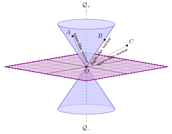
在本文中我们用记号 \(u\sim v\) 来表示 \(u,v\) 属于同一个连通分支，\(u\not\sim v\) 表示 \(u,v\) 属于不同的连通分支。
命题 3. 设 \(u,v\in \mathcal{Q}-\{0\}\)。
证明：(参考 John G. Ratcliffe 2006, sec. 3.1)
不妨设 \(u,v\) 都属于 \(\mathcal{Q}_+\)。记 \(u=\mathbf{x}+cz,\, v=\mathbf{y}+dz\)，其中 \(x,y\) 是 space-like 的向量，\(c,d>0\)。记 \(|\mathbf{x}|=\sqrt{(\mathbf{x},\mathbf{x})}\) 是 \(x\) 的 Euclidean 范数，\(|\mathbf{y}|\) 同理，则 \(|\mathbf{x}|\leq c,\, |\mathbf{y}|\leq d\)。由 Cauchy-Schwartz 不等式有 \[(u,v)=(\mathbf{x},\mathbf{y}) - cd\leq |\mathbf{x}| |\mathbf{y}| - cd\leq cd-cd=0.\] 此即为所证。
由 \((u,v)=0\) 有 \((\mathbf{x},\mathbf{y})=cd\)，结合 \(|(\mathbf{x},\mathbf{y})|\leq |\mathbf{x}| |\mathbf{y}|\) 有 \(|cd|\leq |\mathbf{x}||\mathbf{y}|\)。然而 \(|\mathbf{x}|\leq |c|,\, |\mathbf{y}|\leq |d|\)，这只能是所有等号成立。从而 \(|\mathbf{x}|=|c|,\, |\mathbf{y}|=|d|\) 说明 \(u,v\) 都是 light-like 的向量。由 \(|(\mathbf{x},\mathbf{y})|=|\mathbf{x}||\mathbf{y}|\) 可得 \(\mathbf{x},\mathbf{y}\) 共线，设 \(\mathbf{x}=\lambda \mathbf{y}\)，代入 \((\mathbf{x},\mathbf{y})=cd\) 可得 \(c=\lambda d\)，从而 \(u=\lambda v\)。
\(\blacksquare\)
这个命题有显然的推论是：
推论 4. 设 \(u,v\in\mathcal{Q}-\{0\}\)。
定义： 设 \(a\in V\) 满足 \((a,a)\ne0\)。我们称线性变换
\[\rho: v\to v - 2\frac{(v,a)}{(a,a)}a\]
是一个反射。
不难验证 \(\rho\) 是一个保持内积 \((\cdot,\cdot)\) 的正交变换，它保持超平面 \(H=\{v\in V\mid (a,v)=0\}\) 不变，将 \(a\) 映射为 \(-a\)，并且 \(\rho\) 的阶是 2：\(\rho^2=1\)。\(H\) 也叫做 \(\rho\) 的反射镜面。
设 \(S\) 是一个集合，一个基于 \(S\) 的 Coxeter 矩阵 \(M=(m_{s,t})_{s,t\in S}\) 是一个对称矩阵，其对角线上都是 1，非对角线元素取值范围为 \(\{2,3,\ldots,\infty\}\)。\(|S|\) 叫做 \(M\) 的秩 (rank)，在本文中我们只考虑 \(|S|<\infty\) 的情形。
任一 Coxeter 矩阵 \(M\) 都确定了一个有限表现群 \(W\)，其生成元为集合 \(S\)，表现如下： \[W = \langle s\in S\ |\ (st)^{m_{s,t}}=1\ {\rm if}\ m_{s,t}<\infty\rangle.\]
即 \(S\) 作为 \(W\) 的生成元，其元素满足的生成关系是：
我们称 \((W, S)\) 是一个 Coxeter 系，\(W\) 是一个有限生成 Coxeter 群。
用 Coxeter 矩阵或者群表现的形式来描述一个 Coxeter 群有点不太方便。我们可以用一个有限图 \(\Gamma\) 更直观地表示一个 Coxeter 群 \((W,S)\)，\(\Gamma\) 叫做 \((W,S)\) 的 Coxeter 图：\(\Gamma\) 的顶点集就是 \(S\)，两个顶点 \(s,t\in S\) 之间连一条边当且仅当 \(m_{s,t}\ne 2\)，并且这条边的标号是 \(m_{s,t}\)。在 \(m_{s,t}=3\) 时这个标号通常省略不写。如果 \(\Gamma\) 是连通的，就称 \((W,S)\) 是不可约的。
例： Coxeter 矩阵 \[\begin{pmatrix}1 & 3 & 4\\3&1&\infty\\4&\infty&1\end{pmatrix}\] 对应的 Coxeter 图 \(\Gamma\) 是
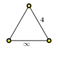
\(\Gamma\) 是连通的，从而 \(W\) 是不可约的。
例： Coxeter 矩阵 \[\begin{pmatrix}1 & m & 2\\m&1&2\\2&2&1\end{pmatrix}\] 对应的 Coxeter 图 \(\Gamma\) 是
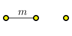
\(\Gamma\) 有两个连通分支，从而 \(W\) 是可约的。
我们主要关心的是 \(\Gamma\) 不可约的情形。这是因为，如果 \(\Gamma\) 包含的连通分支个数大于 1，则 \(\Gamma\) 可以写成若干连通分支的并： \(\Gamma=\Gamma_1\cup\cdots\cup\Gamma_k\)，其中任何 \(\Gamma_i\) 和 \(\Gamma_j\) 之间互相没有边相连，即对任何 \(s\in\Gamma_i\) 和 \(t\in\Gamma_j\) 有 \(m_{s,t}=2\)，从而 \(st=ts\)，于是 \(\Gamma_i\) 中的生成元与 \(\Gamma_j\) 中的生成元两两交换，这时 \(W\) 有直积分解 \(W=W_1\times\cdots\times W_k\)，其中 \(W_1,\ldots,W_k\) 分别是 \(\Gamma_1,\ldots,\Gamma_k\) 对应的 Coxeter 群。所以我们只要研究 \(\Gamma\) 不可约的情形即可。
注记： 还有一种给 \(\Gamma\) 的边标号的方式，叫做 Vinberg 记号，允许给 \(m_{s,t}=\infty\) 的那些边用 \(\leq-1\) 的实数作为标号。比如像下面这样：
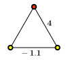
作为抽象 Coxeter 群，它和
是同一个群，但是 \(\infty\) 的边的标号是 \(-1.1\)，这样做相当于指定了这条边的两个顶点在几何实现中的镜面夹角。在后文中我们也会采用这种记号。
对 \(W\) 中的任一元素 \(w\)，它可能有许多种不同的方式表示为 \(S\) 中生成元的乘积。在 \(w\) 的所有表示中，长度最短的表示叫做 \(w\) 的既约表示：即若 \(w=s_1s_2\cdots s_k\) 是一个长度为 \(k\) 的乘积，且 \(w\) 不存在任何长度小于 \(k\) 的表示，就称 \(s_1s_2\cdots s_k\) 是 \(w\) 的既约表示。\(w\) 的既约表示可能不唯一，但它们都具有相同的长度。\(w\) 的长度 \(l(w)\) 就定义为 \(w\) 的任意一个既约表示的长度。
\(l(w)\) 具有如下的性质：
前三点都是显然的，只有 4 需要证明。显然 \(|l(ws)-l(w)|\leq 1\)，所以只要说明 \(l(ws)\) 和 \(l(s)\) 不相等即可。这一步需要用到自由群的泛性质：
设 \(F\) 是由集合 \(S\) 生成的 自由群，定义群同态 \({\rm sgn}: F\to{\pm1}\) 如下：对自由群 \(F\) 的每个生成元 \(s\in S\) 定义映射 \({\rm sgn}(s)=-1\)，然后将此映射扩充为 \(F\) 到 \({\pm1}\) 的群同态。容易验证 \((W,S)\) 的所有生成关系都属于这个同态的核，因此根据 自由群的泛性质，\({\rm sgn}\) 诱导了一个从 \((W,S)\) 到 \({\pm1}\) 的群同态。在此同态下，若 \(w=s_1s_2\cdots s_k\) 是 \(w\) 的任一既约表示，则 \[{\rm sgn}(w)={\rm sgn}(s_1){\rm sgn}(s_2)\cdots{\rm sgn}(s_k)=(-1)^k=(-1)^{l(w)}.\] 从而 \({\rm sgn}(ws)={\rm sgn}(w){\rm sgn}(s)=-{\rm sgn}(w)\) 说明 \(l(ws)\ne l(w)\)。
抽象 Coxeter 群是用生成元和生成关系定义的，直接从这种定义出发研究群结构是非常困难的。在这一节中，我们将介绍如何将抽象的 Coxeter 群“实现”为一个内积空间中的正交反射群，从而可以使用几何、线性代数等多种工具来研究它。
设 \((W,S)\) 是一个 Coxeter 系，\(M=(m_{s,t})_{s,t\in S}\) 是 Coxeter 矩阵，\(V\) 是一个维数为 \(n=|S|\) 的实向量空间，其一组基为 \(\{\alpha_s \mid s\in S\}\)。我们规定 \(V\) 上的一个内积 \((\cdot,\cdot)\) 如下：
\[(\alpha_s,\alpha_t)=\begin{cases}-\cos\frac{\pi}{m_{s,t}}&m_{s,t}<\infty,\\-a_{s,t}&m_{s,t}=\infty.\end{cases}\]
这里 \(a_{s,t}\geq 1\)，不同的 \((s,t)\) 对可以使用不同的 \(a_{s,t}\)。
根据定义 \((\alpha_s,\alpha_s)=-\cos\frac{\pi}{1}=1\)。
注记： \(a_{s,t}=1\) 表示 Euclidean 空间中两个平行的镜面（或者双曲空间中两个平行的镜面）；\(a_{s,t}>1\) 表示双曲空间中两个超平行的镜面；\(m_{s,t}<\infty\) 表示两个相交的镜面。
下图显示了对同一个抽象 Coxeter 群
对标号为 \(\infty\) 的边选择 \(a_{s,t}=1\) 和 \(a_{s,t}=1.15\) 时给出的效果：
| 平行 \(a_{s,t}=1\) | 超平行 \(a_{s,t}=1.15\) |
|---|---|
所以同一个抽象 Coxeter 群在实现为反射群时，尽管这些反射群都是同构的，但它们给出的万花筒的几何结构却可以不同。
上面定义的 \((\cdot,\cdot)\) 未必是通常所指的欧氏内积，而且不同的 \(W\) 给出的 \((\cdot,\cdot)\) 的 Sylvester 符号可能是不同的。但我们最关心的情形有三种：
不属于以上三种类型的一律称为不定的。
正如名字所暗示的那样，\((\cdot,\cdot)\) 是有限型的当且仅当 \(W\) 是有限反射群，这时 \(W\) 给出的万花筒是球面上的密铺；\((\cdot,\cdot)\) 是仿射型的当且仅当 \(W\) 是 Euclidean 空间上的仿射 Weyl 群，这时 \(W\) 给出的万花筒是 Euclidean 空间中的密铺；\((\cdot,\cdot)\) 是双曲型的意味着 \(W\) 给出的是双曲空间中的密铺。这些我们会在后面进行仔细的讨论。
注记： 在后文中，我们也会用 \((\cdot,\cdot)\) 的类型来称呼 \(W\) 以及对应的 Coxeter 图 \(\Gamma\)。例如当 \((\cdot,\cdot)\) 是仿射型时，我们也称 \(W\) 是仿射的，\(\Gamma\) 是仿射的。其它类型同理。这样做有个问题是，\(a_{s,t}\) 的选择可能会影响 \((\cdot,\cdot)\) 的 Sylvester 符号，导致同一个群 \(W\) 在不同的几何实现中有不同的类型。为避免这一问题，我们假定已经事先确定好了一个几何实现，并始终在此实现下讨论。
对任何 \(s\in S\)，定义 \(V\) 上的反射 \(\rho_s\) 为 \[\rho_s(v) = v -2(v,\alpha_s)\alpha_s ,\quad v\in V.\]
我们来证明 \(s\to\rho_s\) 实际上是从 \((W,S)\) 到 \(\mathrm{GL}(V)\) 的群同态，从而 \(\rho: W\to\rho(W)\leqslant\mathrm{GL}(V)\) 是一个线性表示。为此只要证明：
命题 5. \((\rho_s\rho_t)^{m_{s,t}}=1\) 对任何 \(s,t\in S\) 成立。
证明：当 \(s=t\) 时所证即为 \(\rho_s^2=1\)，由于 \(\rho_s\) 是反射这当然是成立的。
下设 \(s\ne t\)，令 \(V_{s,t}={\rm span}\{\alpha_s,\alpha_t\}\) 是 \(\alpha_s,\alpha_t\) 张成的二维子空间，并记 \(V_{s,t}^\bot\) 是 \(V_{s,t}\) 在 \((\cdot,\cdot)\) 下的正交补空间。不难验证 \(\rho_s\) 和 \(\rho_s\) 限制在 \(V_{s,t}^\bot\) 上都是恒等变换。
注意不一定有 \(V=V_{s,t}\oplus V_{s,t}^\bot\) 成立，因为 \((\cdot,\cdot)\) 有可能是退化的。但是只要 \((\cdot,\cdot)\) 非退化，或者 \((\cdot,\cdot)\mid_{V_{s,t}}\) 是非退化的，那么 \(V=V_{s,t}\oplus V_{s,t}^\bot\) 就成立。
我们来计算 \(\sigma=\rho_s\rho_t\) 的阶。记 \(m=m_{s,t}\)，分情况讨论：
\(m<\infty\)。这时 \((\cdot,\cdot)\) 限制在 \(V_{s,t}\) 上的 Gram 矩阵是 \[\begin{pmatrix}1&-\cos\theta\\-\cos\theta&1\end{pmatrix},\qquad \theta=\frac{\pi}{m}.\] 这个矩阵是正定的，从而 \((\cdot,\cdot)\mid_{V_{s,t}}\) 非退化，这时 \(V=V_{s,t}\oplus V_{s,t}^\bot\) 是成立的，而 \(\sigma\) 限制在 \(V_{s,t}^\bot\) 上是恒等变换，所以 \(\sigma\) 在 \(V\) 上的阶就等于它在 \(V_{s,t}\) 上的阶。我们有 \(\rho_s(\alpha_s)=-\alpha_s\) 和 \(\rho_s(\alpha_t)=2\cos\theta\alpha_s+\alpha_t\)，以及关于 \(\rho_t\) 的类似表达式。不难验证有 \[\begin{align*}&\alpha_s\xrightarrow{\ \rho_t\ }\frac{\sin \theta}{\sin\theta}\alpha_s+\frac{\sin 2\theta}{\sin\theta}\alpha_t\xrightarrow{\ \rho_s\ }\frac{\sin 3\theta}{\sin\theta}\alpha_s+\frac{\sin 2\theta}{\sin\theta}\alpha_t\xrightarrow{\ \rho_t\ }\frac{\sin 3\theta}{\sin\theta}\alpha_s+\frac{\sin 4\theta}{\sin\theta}\alpha_t\xrightarrow{\ \rho_s\ }\cdots\\ &\alpha_t\xrightarrow{\ \rho_s\ }\frac{\sin 2\theta}{\sin\theta}\alpha_s+\frac{\sin \theta}{\sin\theta}\alpha_t\xrightarrow{\ \rho_t\ }\frac{\sin 2\theta}{\sin\theta}\alpha_s+\frac{\sin 3\theta}{\sin\theta}\alpha_t\xrightarrow{\ \rho_s\ }\frac{\sin 4\theta}{\sin\theta}\alpha_s+\frac{\sin 3\theta}{\sin\theta}\alpha_t\xrightarrow{\ \rho_t\ }\cdots\end{align*} \] 这两个链的周期都是 \(2m\)，它们的第 \(2m+1\) 项分别是 \(\frac{\sin (2m+1)\theta}{\sin\theta}\alpha_s+\frac{\sin (2m)\theta}{\sin\theta}\alpha_t=\alpha_s\) 和 \(\frac{\sin (2m)\theta}{\sin\theta}\alpha_s+\frac{\sin (2m+1)\theta}{\sin\theta}\alpha_t=\alpha_t\)，又回到了各自的第一项。所以 \(\sigma\) 的阶等于 \(m\)。
\(m=\infty\)。这时未必有 \(V=V_{s,t}\oplus V_{s,t}^\bot\)。我们来论证 \(\sigma\) 在 \(V_{s,t}\) 上的阶是无穷，那么它在 \(V\) 上的阶必然也是无穷。 设 \(\theta\geq0\) 使得 \(a_{s,t}=\cosh\theta\)，不难验证有 \[\begin{align*}&\alpha_s\xrightarrow{\ \rho_t\ }\frac{\sinh \theta}{\sinh\theta}\alpha_s+\frac{\sinh 2\theta}{\sinh\theta}\alpha_t\xrightarrow{\ \rho_s\ }\frac{\sinh 3\theta}{\sinh\theta}\alpha_s+\frac{\sinh 2\theta}{\sinh\theta}\alpha_t\xrightarrow{\ \rho_t\ }\frac{\sinh 3\theta}{\sinh\theta}\alpha_s+\frac{\sinh 4\theta}{\sinh\theta}\alpha_t\xrightarrow{\ \rho_s\ }\cdots\\ &\alpha_t\xrightarrow{\ \rho_s\ }\frac{\sinh 2\theta}{\sinh\theta}\alpha_s+\frac{\sinh \theta}{\sinh\theta}\alpha_t\xrightarrow{\ \rho_t\ }\frac{\sinh 2\theta}{\sinh\theta}\alpha_s+\frac{\sinh 3\theta}{\sinh\theta}\alpha_t\xrightarrow{\ \rho_s\ }\frac{\sinh 4\theta}{\sinh\theta}\alpha_s+\frac{\sinh 3\theta}{\sinh\theta}\alpha_t\xrightarrow{\ \rho_t\ }\cdots\end{align*} \]（当 \(a_{s,t}=1\) 时 \(\theta=0\)，\(\frac{\sinh k\theta}{\sinh\theta}\) 应当理解为 \(k\)）
这两个链条都是永不重复的，所以 \(\sigma\) 的阶是无穷。
至此命题得证。\(\blacksquare\)
注记： 这个命题的证明虽然看起来包含了一些复杂的计算，但是我们做的事情很重要：我们实际上计算了 \(s,t\) 生成的二面体群的根系，这个计算结果在后面会用到。
后面我们会看到 \(\rho\) 实际是一个同构，这样就把抽象的 Coxeter 群 \(W\) “实现为”具体的反射群 \(\rho(W)\)。
最后是一个记号的简化：我们把 \(w\in W\) 在 \(V\) 上的作用简写为 \(\rho(w)(v)=wv\)。
定义： 我们称集合 \[\Phi=\{w\alpha_s\mid w\in W, \, s\in S\}\] 为 \((W, S)\) 的根系，任何 \(\lambda\in\Phi\) 叫做根向量，简称为根。\(\Delta=\{\alpha_s\mid s\in S\}\) 叫做单根系，其中的根叫做单根。由于 \(\Delta\) 构成 \(V\) 的一组基，所以 \(\Phi\) 中任何根 \(\lambda\) 都是单根的线性组合： \[\lambda = \sum_{s\in S}c_s\alpha_s,\quad c_s\in\mathbb{R}.\] 如果上面的所有系数 \(c_s\) 都非负，就称 \(\lambda\) 是一个正根；若所有系数 \(c_s\) 都非正，就称 \(\lambda\) 是一个负根。正根和负根组成的集合分别记作 \(\Phi^+\) 和 \(\Phi^-\)，显然 \(\Phi^+\cap\Phi^-=\emptyset\)。
这里有个问题：每个根都必然是正根或者负根吗？即是否有 \(\Phi=\Phi^+\cup\Phi^-\) 成立？这并不显然，但其实答案是肯定的，为此我们需要一个关键引理。这个引理的证明有点长，但是它非常非常重要，Coxeter 群的几乎所有性质的证明多少都会用到它。在引入它之前，我们需要做一点小小的准备。
设 \(I\subseteq S\) 是 \(S\) 的子集，\(I\) 中的生成元在 \((W,S)\) 中生成一个子群 \(W_I \leqslant (W,S)\)，\(W_I\) 叫做标准椭圆子群。记 \(l_I(\cdot)\) 是 \(W_I\) 上的长度函数，则显然对任何 \(w\in W_I\) 有 \(l(w)\leq l_I(w)\) 成立（因为 \(W_I\) 中的任何既约表示是 \(W\) 中的未必既约的表示）。我们后面会看到 \(l_I=l\mid_{W_I}\)，但现在我们暂时还证明不了它。
现在我们给出本文最重要的一个引理，不夸张地说，几乎所有 Coxeter 群性质的证明中多少都要用到它。
引理 6. 设 \(s\in S,\, w\in W\)，则
这里 1 和 2 是等价的：如果 1 成立，则
\[ \begin{align*} l(ws)<l(w)&\Leftrightarrow l((ws)s) > l(ws)\\ &\Leftrightarrow ws(\alpha_s)\in\Phi^+\\ &\Leftrightarrow w(-\alpha_s)\in\Phi^+\\ &\Leftrightarrow w\alpha_s\in\Phi^-. \end{align*} \]
所以只需要证明 1 即可。
我们先证明充分性：若 \(l(ws)>l(w)\) 则 \(w\alpha_s\in\Phi^+\)。
对 \(l(w)\) 归纳：\(l(w)=0\) 时 \(w=1\)，结论显然成立。下面设结论对所有长度小于 \(l(w)\) 的元素成立。
我们总是可以取 \(t\ne s\) 使得 \(l(wt)<l(w)\)，比如 \(t\) 取为 \(w\) 的某个既约表达式的最后一项。令 \(I=\{s,t\}\)，定义 \[A = \{(x,x_I)\in W\times W_I\mid w=xx_I,\,l(w)=l(x)+l_I(x_I)\}.\] 由于 \((wt,t)\in A\) 所以 \(A\) 不是空集。取 \((v,v_I)\in A\) 使得 \(l(v)\) 取得最小值，则 \(l(v)\leq l(wt)=l(w)-1\)。我们断言对任何 \(u\in I\) 都有 \(l(vu)>l(v)\)。若不然，则 \(l(vu)=l(v)-1\)，于是 \[\begin{align*} l(w)&=l(vu\cdot uv_I)\leq l(vu) + l(uv_I) = (l(v) -1) + l(uv_I)\\ &\leq (l(v) -1) + l_I(uv_I)\\ &\leq (l(v) -1) + (l_I(v_I) + 1)\\ & = l(v) + l_I(v_I)=l(w). \end{align*}\] 于是所有的不等号都是等式，从而 \((vu,uv_I)\in A\)，但这与 \((v,v_I)\) 的选择矛盾。所以不论 \(u=s\) 或是 \(u=t\) 都有 \(l(vu)>l(v)\)。
由于 \(l(v)\leq l(w)-1\) 所以根据归纳假设 \(v\alpha_s,\,v\alpha_t\) 都是正根。如果我们能够证明 \(v_I\alpha_s\) 是 \(\alpha_s\) 和 \(\alpha_t\) 的非负线性组合：\[v_I\alpha_s = a\alpha_s + b\alpha_t,\quad a,\,b\geq0,\] 则 \[w\alpha_s=vv_I\alpha_s=v(a\alpha_s + b\alpha_t)=av\alpha_s + bv\alpha_t\in\Phi^+.\] 这就证明了结论。
首先注意到 \(v_I\in W_I\) 的任何既约表示都是 \(s,t\) 的交错乘积，而且不能以 \(s\) 结尾，否则 \(l_I(v_Is)=l_I(v_I)-1\)，从而 \[l(ws)=l(vv_Is)\leq l(v) + l(v_Is)\leq l(v)+l_I(v_Is)=l(v)+l_I(v_I)-1=l(w)-1.\] 这与 \(l(ws) > l(w)\) 矛盾！
于是 \(v_I\) 形如 \(v_I=st\cdots t\) 或者 \(v_I=ts\cdots t\)，问题归结为分析这样的 \(v_I\) 在 \(\alpha_s\) 上的作用。这个我们已经在 前面计算过了，直接拿过来分析就行：
\(m=m_{s,t}<\infty\) 时，\[\alpha_s\xrightarrow{\ t\ }\frac{\sin \theta}{\sin\theta}\alpha_s+\frac{\sin 2\theta}{\sin\theta}\alpha_t\xrightarrow{\ s\ }\frac{\sin 3\theta}{\sin\theta}\alpha_s+\frac{\sin 2\theta}{\sin\theta}\alpha_t\xrightarrow{\ t\ }\cdots\] 其中 \(\theta=\pi/m\)。这个链的第 \(k\) 项形如 \[ \begin{cases} \frac{\sin k\theta}{\sin\theta}\alpha_s + \frac{\sin (k-1)\theta}{\sin\theta}\alpha_t, & \text{$k$ odd},\\ \newline \frac{\sin (k-1)\theta}{\sin\theta}\alpha_s + \frac{\sin k\theta}{\sin\theta}\alpha_t, & \text{$k$ even}. \end{cases} \] 看起来并不是每一项都是 \(\alpha_s,\alpha_t\) 的非负线性组合，但是前 \(m\) 项都是，这就足够了：由于 \(v_I\) 的任何既约表示不能以 \(s\) 结尾，所以 \(v_I\) 可能的取值是二面体群 \(D_m\) 中所有长度小于 \(m\) 且以 \(t\) 结尾的那些元素： \[1,\ t,\ st,\ \ldots,\ \overbrace{\ast\cdots\ast t}^{\leq m-1},\] 它们正好构成序列的前 \(m\) 项。\(v_I\) 的长度不能等于 \(m\) 是因为根据辫关系 \[\overbrace{sts\cdots}^{m_{s,t}}=\overbrace{tst\cdots}^{m_{s,t}}\] \(v_I\) 会等于以 \(s\) 结尾的另一个既约表示，与 \(v_I\) 的任何既约表示不能以 \(s\) 结尾矛盾。
\(m=m_{s,t}=\infty\) 时，仍然记 \(\cosh\theta=a_{s,t},\,\theta\geq0\)，则 \[\alpha_s\xrightarrow{\ t\ }\frac{\sinh \theta}{\sinh\theta}\alpha_s+\frac{\sinh 2\theta}{\sinh\theta}\alpha_t\xrightarrow{\ s\ }\frac{\sinh 3\theta}{\sinh\theta}\alpha_s+\frac{\sinh 2\theta}{\sinh\theta}\alpha_t\xrightarrow{\ t\ }\cdots\] 每一项都是 \(\alpha_s,\alpha_t\) 的非负线性组合。
必要性的证明：
我们要证明若 \(w\alpha_s\in\Phi^+\) 则 \(l(ws)>l(w)\)。若不然，则 \(l(w)=l(wss)>l(ws)\)，从而由充分性的证明知道 \(ws\alpha_s\in\Phi^+\)，即 \(w\alpha_s\in\Phi^-\)，矛盾！至此关键引理得证。\(\blacksquare\)
从 引理 6 出发我们可以得到许多重要推论：
推论 7. 如果 \(w\in W\) 满足对任何 \(v\in V\) 有 \(wv=v\) 则 \(w=1\)。即表示 \(\rho: W\to{\rm GL}(V)\) 是忠实的。
证明：若 \(w\ne 1\)，则存在 \(s\in S\) 使得 \(l(ws)<l(w)\)，从而 \(w\alpha_s\in\Phi^-\)，这与 \(w\alpha_s=\alpha_s\) 矛盾。
推论 8. 每个根不是正根就是负根，即 \(\Phi=\Phi^+\cup\Phi^-\)。
证明：由定义任何 \(\lambda\in\Phi\) 可以表示为 \(\lambda=w\alpha_s\)。若 \(l(ws)>l(w)\) 则 \(\lambda\in\Phi^+\)，否则 \(\lambda\in\Phi^-\)。
推论 9. 任何单反射 \(s\) 置换 \(\Phi^+-\{\alpha_s\}\) 中的正根，同时将 \(\alpha_s\) 变为 \(-\alpha_s\)。
证明：这是因为对任何正根 \(\lambda\ne\alpha_s\in\Phi^+\)，其作为单根的线性组合 \(\lambda=\sum_{t\in S}c_t\alpha_t\) 中必有某个 \(t\ne s\) 使得 \(c_t>0\)，于是 \(s\lambda=\lambda-2(\lambda,\alpha_s)\alpha_s\) 的 \(\alpha_t\) 分量保持不变仍然为正，从而根据 推论 8 \(s\lambda\) 必须仍然是正根。
推论 10. 对 \(w\in W\)，定义 \(N(w)\) 为被 \(w\) 变成负根的那些正根组成的集合： \[N(w)=\{\lambda\in\Phi^+\mid w\lambda\in\Phi^-\},\] 则 \(|N(w)|=l(w)\)。
证明：我们已经知道 \(l(w)\) 满足如下的递推关系：
\[ l(ws) =\begin{cases} l(w)+1,& w\alpha_s\in\Phi^+,\\ l(w)-1,& w\alpha_s\in\Phi^-. \end{cases} \]
以及 \(l(1)=0\)。由于 \(N(1)=\emptyset\)，所以只需要证明 \(|N(w)|\) 也满足同样的递推关系即可：
\[ |N(ws)| =\begin{cases}|N(w)|+1,& w\alpha_s\in\Phi^+,\\ |N(w)|-1,& w\alpha_s\in\Phi^-.\end{cases} \]
实际上对任何 \(\lambda\in\Phi^+\) 且 \(\lambda\ne\alpha_s\)，根据 推论 9 \(s\lambda\) 也是正根，所以由恒等式 \[(ws)\lambda\in\Phi^- \Leftrightarrow w(s\lambda)\in\Phi^-.\] 可得当 \(\lambda\in\Phi^+-\{\alpha_s\}\) 时有 \[\lambda\in N(ws)\Leftrightarrow s\lambda\in N(w),\] 即 \(\lambda\leftrightarrow s\lambda\) 给出了 \(N(ws)-\{\alpha_s\}\) 和 \(N(w)-\{\alpha_s\}\) 的一一对应。除此之外，\(\alpha_s\) 必然恰好属于 \(N(ws)\) 和 \(N(w)\) 之一：
\(\blacksquare\)
推论 11. 若 \(w\in W\) 把正根仍然映射为正根，即 \(w(\Phi^+)\subseteq\Phi^+\)，则 \(w=1\)。
证明：若 \(w\) 将正根仍然映射为正根，则根据 推论 10 有 \(l(w)=|N(w)|=0\)，从而 \(w=1\)。
推论 12. \(|W|<\infty\) 当且仅当 \(|\Phi|<\infty\)。
证明：如果 \(W\) 是有限群，由于 \(\Phi=W\cdot \Delta\)，\(|\Phi|\leq |W|\cdot |\Delta|\) 也是有限的。
反之若 \(|\Phi|<\infty\)，由于 \(W\) 保持 \(\Phi\) 不变，所以 \(W\) 置换地作用在 \(\Phi\) 上，即有 \(W\) 到置换群 \(S_{|\Phi|}\) 的同态 \(W\xrightarrow{\varphi} S_{|\Phi|}\)。推论 11 说明 \(\varphi\) 是嵌入，从而 \(W\) 也是有限的。
推论 13. 若 \(W\) 是一个有限群，则存在唯一的元素 \(w\)，\(w\) 是 \(W\) 中长度最大者，它交换 \(\Phi^+\) 和 \(\Phi^-\)：\(w(\Phi^+)=\Phi^-\)，且 \(w\) 是一个对合：\(w^2=1\)。
证明：由于 \(W\) 有限所以可以任取一个长度最大的元素 \(w\)。于是对任何 \(s\in S\) 有 \(l(ws)<l(w)\)，从而 \(w\alpha_s\in\Phi^-\)，从而 \(w\) 把 \(\Phi^+\) 变为 \(\Phi^-\)。
由于 \(w^2\) 仍然把 \(\Phi^+\) 映射为 \(\Phi^+\)，所以由 推论 11 \(w^2=1\)，因此 \(w\) 是一个对合。
如果还存在其它的最长元素 \(w'\ne w\) 的话，则 \(w'\) 也满足 \(w'(\Phi^+)=\Phi^-\)，从而 \(w^{-1}w'\) 保持 \(\Phi^+\) 不变，根据 推论 11 有 \(w^{-1}w'=1\)，即 \(w=w'\)。
推论 14. 设 \(I\subsetneqq S\) 是真子集，\(\lambda\in \Phi^+\backslash \Phi^+_I\) 是正根，则对任何 \(w\in W_I\)，\(w\lambda\) 仍然是正根。
证明：注意到对任何根 \(\lambda\in\Phi\) 和 \(s\in S\)，\(s\lambda=\lambda-2(\alpha_s,\lambda)\alpha_s\) 是 \(\lambda\) 和 \(\alpha_s\) 的线性组合。同理 \(ts\lambda\) 是 \(s\lambda\) 和 \(\alpha_t\) 的线性组合，从而是 \(\lambda,\alpha_s,\alpha_t\) 的线性组合。由此可以推广到对任何 \(w=s_1s_2\cdots s_k\)，\(w\lambda\) 是 \(\lambda\) 和 \(\{\alpha_1,\ldots,\alpha_k\}\) 的线性组合： \[w\lambda=\lambda + \sum_{t\in I}c_t\alpha_t.\] 由于 \(\lambda\in \Phi^+\backslash \Phi^+_I\)，所以 \(\lambda\) 表示为单根的线性组合时，其至少有一项 \(\alpha_s,\,s\notin I\) 的系数大于 0，从而 \(w\lambda\) 关于这一项的系数也大于 0，所以 \(w\lambda\) 不可能是负根。\(\blacksquare\)
推论 15. 设 \(w=s_{\alpha_1}s_{\alpha_2}\cdots s_{\alpha_n}\)，则对任何 \(v\in V\) 有 \[wv = v - \sum_{i=1}^n2(v,\alpha_i)\beta_i.\] 其中 \(\beta_i=s_{\alpha_1}\cdots s_{\alpha_{i-1}}(\alpha_i)\) 是正根。（\(i=1\) 时 \(\beta_1\) 理解为 \(\alpha_1\)）
证明：对 \(n\) 归纳，\(n=1\) 时 \(w=s_{\alpha_1}\)，\(\beta_1=\alpha_1\)，所以 \[wv=s_{\alpha_1}v=v-2(v,\alpha_1)\alpha_1=v-2(v,\alpha_1)\beta_1.\] 结论成立。下设结论在小于 \(n\) 时都成立。对 \(w'=s_{\alpha_2}\cdots s_{\alpha_n}\) 应用归纳假设，有 \[w'v=v - \sum_{i=2}^n2(v,\alpha_i)\beta_i'.\] 其中 \(\beta_i'=s_{\alpha_2}\cdots s_{\alpha_{i-1}}(\alpha_i)\)，并且由归纳假设 \(\beta_i'\) 是正根。 于是 \[wv=s_{\alpha_1}w'v=s_{\alpha_1}v-\sum_{i=2}^n2(v,\alpha_i)s_{\alpha_1}(\beta_i')=\sum_{i=1}^n2(v,\alpha_i)\beta_i.\] 注意到每个 \(\beta_i'\) 是 \(\{\alpha_i,2\leq i\leq i\}\) 的线性组合，它是正根说明 \(\beta_i'\ne\alpha_1\)，从而 \(s_{\alpha_1}(\beta_i')=\beta_i\) 仍然是正根。于是结论对 \(n\) 也成立。\(\blacksquare\)
推论 16. 设 \(w\in W_I\)，则对 \(w\) 的任何既约表示 \(w=s_{i_1}\cdots s_{i_r}\) 都有 \(s_{i_1},\ldots,s_{i_r}\in I\)，特别地 \(l_I(w)=l(w)\)。
证明：我们从右到左依次验证 \(s_{i_r},\ldots,s_{i_1}\in I\)。记 \(s=s_{i_r}\)，由于 \(l(ws)<l(w)\) 所以 \(w\alpha_s\in\Phi^-\)。又由于 \(w\in W_I\) 所以 \(w\) 形如 \(w=t_1\cdots t_q,\,t_i\in I\)。于是 \(w\alpha_s\) 是 \(\alpha_s\) 和一些 \(\alpha_{t_i}\) 的线性组合： \[w\alpha_s=\alpha_s+\sum_{i=1}^q c_i\alpha_{t_i}.\] 由于 \(w\alpha_s<0\) 所以必然有某个 \(i\) 使得 \(s=t_i\)，即 \(s\in I\)。继续对 \(ws=s_{i_1}\cdots s_{i_{r-1}}\in W_I\) 重复此论证即得每个 \(s_{i_j}\in I\)。
在获得了 \(V\) 中关于根系的一些知识后，我们下面将转移到 \(V\) 的对偶空间 \(V^\ast\) 中，讨论万花筒的结构。
设 \(V^\ast\) 是 \(V\) 的对偶空间，我们有一个自然的双线性映射 \[V\times V^\ast\to\mathbb{R}: \langle v,\,f\rangle= f(v).\] 任何 \(V\) 上的可逆线性变换 \(g\in\mathrm{GL}(V)\) 同样作用在 \(V^\ast\) 上：对任何 \(f\in V^\ast\)，线性泛函 \(gf\) 定义为 \[(g f)(v) = f(g^{-1} v).\] 这个定义的好处是它保持上面的双线性映射 \(\langle \,,\,\rangle\) 不变： \[\langle gv,\,gf\rangle = \langle v,\,f\rangle.\] 于是 \[\langle gv,\,f\rangle = \langle v,\,g^{-1}f\rangle.\] 特别当 \(g=s\) 是一个反射时，由于 \(s=s^{-1}\) 所以 \[\langle sv,\,f\rangle = \langle v,\,sf\rangle.\] 这种将反射在 \((\cdot,\cdot){\,}{}\) 两边跳来跳去的技巧后面会经常用到。
由于 \(V\) 和 \(V^\ast\) 互为对偶空间，所以 \(\Delta=\{\alpha_s\}\) 是 \(V^\ast\) 上的一组线性无关的泛函，定义它们的正半空间的交为 \[\mathcal{D}= \bigcap_{s\in S}\{x\in V^\ast\mid \langle \alpha_s,\,x\rangle > 0\}.\] 你可以把 \(\mathcal{D}\) 理解为万花筒中原像所在的房间，\(\alpha_s=0\) 是房间的墙壁。\(\mathcal{D}\) 总是 \(V^\ast\) 中的非空开集，其闭包记作 \(\overline{\mathcal{D}}\)，\(\overline{\mathcal{D}}\) 就是 \(\mathcal{D}\) 加上了房间四周的墙壁。
\(W\) 同样作用在 \(V^\ast\) 上： \[\langle w\lambda,\,v\rangle = \langle \lambda,\,w^{-1}v\rangle.\quad \lambda\in V^\ast,\, v\in V.\] 不难验证在此定义下，\(W\) 也同构地映射为 \(V^\ast\) 上的反射群。
定义： 定义 Tits 锥为 \[\mathcal{C}= \bigcup_{w\in W} w\overline{\mathcal{D}}.\] Tits 锥 \(\mathcal{C}\) 即为万花筒，它是 \(W-\) 不变的。
读者可能有疑问为什么 Tits 锥是位于对偶空间中的。一个看起来更自然的想法是，直接把 \(V\) 中所有以 \(\Delta\) 为法向量的正半空间之交 \[\bigcap_{s\in S}\{v\in V\mid(\alpha_s, v)>0\}\] 作为基本区域 \(\mathcal{D}\)。在内积 \((\cdot,\cdot)\) 非退化时，这样做是可以的；但是在 \((\cdot,\cdot)\) 退化的情形，可能会出现 \(\mathcal{D}\) 是空集的问题。以 Coxeter 矩阵 \[\begin{pmatrix}1 & \infty\\\infty&1\end{pmatrix}\] 为例，在 \(a_{s,t}=1\) 时它给出的内积的 Gram 矩阵是 \[\begin{pmatrix}(\alpha_s,\alpha_s) & (\alpha_s,\alpha_t)\\(\alpha_t,\alpha_t)& (\alpha_t,\alpha_t)\end{pmatrix} =\begin{pmatrix}1&-1\\-1&1\end{pmatrix}.\] 假设 \(v=a\alpha_s+b\alpha_t\in\mathcal{D}\) 满足 \((v,\alpha_s)>0\) 且 \((v,\alpha_t)>0\)，你会发现这要求 \(a>b\) 且 \(b>a\)，不存在这样的 \(v\)！但是通过区分 \(V\) 和 \(V^\ast\) 上的作用就可以避免这个问题。因为 \(\Delta\) 是一组线性无关的泛函，它们在对偶空间中正半空间的交一定是个非空的拓扑开集。
读者可能注意到了：我们使用了 Tits 锥这个称呼，但 \(\mathcal{C}\) 真的是一个锥吗？这可不显然。要证明 Tits 锥确实是锥，我们需要它的另一种等价刻画。
我们先回顾一下锥的概念：
定义： 设 \(C\) 是某实向量空间的子集。如果对任何 \(x\in C\) 和实数 \(\alpha\geq0\) 都有 \(\alpha x\in C\)，就称 \(C\) 是一个锥。如果 \(C\) 还是凸集，就称 \(C\) 是凸锥。凸锥满足对任何 \(x,y\in C\) 和非负实数 \(\alpha,\beta\geq0\)，\(\alpha x + \beta y\) 仍然属于 \(C\)。
定义： 设 \(\Delta^\ast=\{\omega_t\}\subset V^\ast\) 是 \(\Delta\) 的一组对偶基，满足 \(\langle \alpha_s,\,\omega_t\rangle=\delta_{st}\)，\(\Delta^\ast\) 叫做基本权。记 \[\Omega=\bigcup_{w\in W}w\Delta^\ast.\] \(\Omega\) 中的元素叫做权。
设 \(X=\{x_1,\ldots,x_n\}\) 是一个有限集，我们用记号 \(\mathrm{cone}(X)\) 表示 \(X\) 中元素的所有非负线性组合： \[\mathrm{cone}(X) = \left\{\sum_{i=1}^n c_ix_i,\, c_i\geq0\right\}.\]
命题 17. \(\overline{\mathcal{D}}=\mathrm{cone}(\Delta^\ast)\)。
证明：对 \(x\in V^\ast\)，设 \(x=\sum_{t\in S}c_t\omega_t\)，注意到对任何 \(s\in S\) 有 \(\langle \alpha_s,\,x\rangle = c_s\)，所以 \[x\in\mathrm{cone}(\Delta^\ast)\Leftrightarrow c_s\geq0 \text{ for all } s \in S \Leftrightarrow \langle \alpha_s,\,x\rangle\geq 0 \text{ for all } s\in S \Leftrightarrow x\in\overline{\mathcal{D}}. \] \(\blacksquare\)
对任一 \(x\in V^\ast\)，定义 \[\mathrm{Neg}(x)= \{\lambda\in \Phi^+\mid \langle \lambda,\,x\rangle<0\}.\] \(\mathrm{Neg}(x)\) 是正根 \(\Phi^+\) 的子集，表示 \(x\) 位于哪些镜子的背面。
一个显然的事实是，\(\overline{\mathcal{D}}\) 位于所有镜子的正面，即 \(\overline{\mathcal{D}}=\{x\in V^\ast\mid \mathrm{Neg}(x)=\emptyset\}\)。
我们来证明：
定理 18. Tits 锥 \(\mathcal{C}= \{x\in V^\ast \mid |\mathrm{Neg}(x)| < \infty\}\)。
注记：
这个定理的几何意义是，每个镜子的正面是包含 \(\mathcal{D}\) 的一侧，另一侧是背面，Tits
锥就是那些只落在有限多个镜子背面的点，它们一定经过有限次单反射后变换到
\(\overline{\mathcal{D}}\)
中。换言之，Tits 锥中的点使得下面的 while
循环可以在有限次后结束：
while dot(x, alpha_s) < 0 for some s in S:
x = reflect(x, alpha_s)下面的动画展示了 \(\Gamma=\Delta(3,3,7)\) 对应的双曲 Coxeter 群的 Tits 锥中反射次数不超过 10 的点：
证明：
\(\Rightarrow\): 设 \(x\in\mathcal{C}\)，则 \(x\) 可以表示为 \(x=wv\)，其中 \(w\in W,v\in\overline{\mathcal{D}}\)。设 \(\lambda\in\Phi^+\)，由恒等式 \[\langle \lambda,\,x\rangle=\langle \lambda,\,wv\rangle=\langle w^{-1}\lambda,\,v\rangle\] 有 \(\langle \lambda,\,x\rangle< 0\Rightarrow \langle w^{-1}\lambda,\,v\rangle<0\Rightarrow w^{-1}\lambda\in\Phi^-\)，即 \(\mathrm{Neg}(x)\subseteq N(w^{-1})\)，从而 \[|\mathrm{Neg}(x)|\leq |N(w^{-1})|=l(w^{-1})=l(w)<\infty.\]
\(\Leftarrow\): 反之若 \(|\mathrm{Neg}(x)|<\infty\)，我们来论证可以选择 \(w\in W,v\in\overline{\mathcal{D}}\) 来使得 \(x=wv\)。这里的想法是，我们每次选择一个单根 \(\alpha_s\) 对应的镜面，使得 \(x\) 落在这个镜子的背面，然后将 \(x\) 关于 \(\alpha_s\) 反射过去变到 \(\alpha_s\) 的正面，这个操作会将遮挡在 \(x\) 和 \(\overline{\mathcal{D}}\) 之间的镜子个数严格减少 1。如此这般直到 \(x\) 落入 \(\overline{\mathcal{D}}\) 为止。
严格的论证如下：
若 \(\mathrm{Neg}(x)=\emptyset\) 这显然成立，因为这时 \(x\) 本身就落在 \(\overline{\mathcal{D}}\) 中。当 \(\mathrm{Neg}(x)\ne\emptyset\) 时，其中一定包含一个单根 \(\alpha_s\in\Delta\)，于是 \(\langle \alpha_s,\,x\rangle< 0\)。考虑 \(x\) 关于 \(\alpha_s\) 的镜像点 \(sx\)，我们来分析集合 \(\mathrm{Neg}(sx)\)，即那些遮挡 \(sx\) 的镜子。我们断言 \(\mathrm{Neg}(sx) = s\cdot(\mathrm{Neg}(x)-\{\alpha_s\})\)，即 \(\mathrm{Neg}(sx)\) 元素个数比 \(\mathrm{Neg}(x)\) 严格减少 1。
首先 \(sx\) 位于 \(\alpha_s\) 的正面，所以 \(\alpha_s\notin\mathrm{Neg}(sx)\)。设 \(\lambda\ne\alpha_s\) 是任一正根，则 \(s\lambda\) 也是正根。于是 \[\lambda\in\mathrm{Neg}(sx)\Leftrightarrow\langle sx,\,\lambda\rangle<0\Leftrightarrow\langle x,\,s\lambda\rangle<0\Leftrightarrow s\lambda\in\mathrm{Neg}(x).\] 即 \(\lambda\leftrightarrow s\lambda\) 是 \(\mathrm{Neg}(sx)\) 和 \(\mathrm{Neg}(x)-\{\alpha_s\}\) 的一一对应，从而 \(\mathrm{Neg}(sx) = s\cdot(\mathrm{Neg}(x)-\{\alpha_s\})\)。重复此过程我们最终可以取一组 \(s_{i_1},\ldots,s_{i_k}\) 使得 \(y=s_{i_1}\cdots s_{i_k}x\) 满足 \(\mathrm{Neg}(y)=\emptyset\)，从而 \(y\in\overline{\mathcal{D}}\)，这就证明了结论。
推论 19. Tits 锥 \(\mathcal{C}\) 是凸锥。
证明：设 \(x, y\in\mathcal{C}\) 和 \(\alpha,\beta\geq0\)，我们需要证明 \(z=\alpha x+\beta y\) 也属于 \(\mathcal{C}\)。但是 \[\mathrm{Neg}(z)\subseteq\mathrm{Neg}(x)\cup\mathrm{Neg}(y),\] 根据 定理 18 \(\mathrm{Neg}(x),\,\mathrm{Neg}(y)\) 都是有限集，所以 \(\mathrm{Neg}(z)\) 也有限，从而 \(z\in\mathcal{C}\)，即 \(\mathcal{C}\) 是凸锥。
推论 20. \(\mathcal{C}=\mathrm{cone}(\Omega)\)。
证明：由于 \(\mathrm{cone}(\Omega)\supset\mathrm{cone}(\Delta^\ast)=\overline{\mathcal{D}}\)，以及 \(\mathrm{cone}(\Omega)\) 是 \(W-\) 不变的，所以它包含 \(\bigcup_{w\in W}w\overline{\mathcal{D}}=\mathcal{C}\)。
另一方面根据 命题 17，\(\mathcal{C}\supset\overline{\mathcal{D}}\supset\Delta^\ast\)，以及 \(\mathcal{C}\) 是 \(W-\) 不变的，所以 \(\mathcal{C}\supset\bigcup_{w\in W}w\Delta^\ast=\Omega\)。而 推论 19 证明了 \(\mathcal{C}\) 是凸锥，所以 \(\mathcal{C}\supset\mathrm{cone}(\Omega)\)。\(\blacksquare\)
接下来我们来讨论 \(\mathcal{C}\) 的内点集 \(\mathcal{C}^\circ\)。我们将证明 \(\mathcal{C}^\circ\) 由那些稳定化子群有限的点组成： \[\mathcal{C}^\circ = \{x\in V^\ast \mid |\mathrm{Stab}(x)| < \infty\}.\]
分两步，我们首先来证明标准椭圆子群 \(W_J\) 对应的是 \(J\) 中镜面交点的稳定化子群：
定理 21. 对任何 \(x\in\overline{\mathcal{D}}\)，记 \(J=\{s\in S \mid \langle \alpha_s,\,x\rangle=0\}\)，则 \[\{w\in W\mid wx=x\} = W_J = \{w\in W\mid wx\in\overline{\mathcal{D}}\}.\]
注记： 这个定理的含义是，对 \(\overline{\mathcal{D}}\) 中的一点 \(x\)，其稳定化子群 \(\mathrm{Stab}(x)\) 是一个标准椭圆子群，由那些包含 \(x\) 的墙面 \(\{\alpha_s\in\Delta \mid \langle \alpha_s,\,x\rangle=0\}\) 对应的反射生成。
证明：
对任何 \(s\in J\) 和 \(v\in V\) 我们有 \[\langle v,\,sx\rangle = \langle sv,\,x\rangle=\langle v-2(v,\alpha_s)\alpha_s,\,x\rangle=\langle v,\,x\rangle,\] 由 \(v\) 的任意性可得 \(sx=x\)，从而 \(W_J\subseteq\{w\in W \mid wx=x\}\)。
另一方面显然有 \[\{w\in W\mid wx=x\}\subseteq \{w\in W\mid wx\in\overline{\mathcal{D}}\},\] 所以只要再证明 \(\{w\in W\mid wv\in\overline{\mathcal{D}}\}\subseteq W_J\) 即可。我们从 \(w\) 最末一个元素开始逐个验证它们属于 \(J\)。
设 \(w\ne1\) 的某个既约表示的结尾是 \(s\)，则 \(l(ws)<l(w)\)，于是 \(w\alpha_s\in\Phi^-\)。如果 \(wx\in\overline{\mathcal{D}}\)，则我们有 \[0\geq \langle w\alpha_s,\,wx\rangle = \langle \alpha_s,\,x\rangle\geq0.\] 其中第一个不等号是因为 \(w\alpha_s\) 是负根和 \(wx\in\overline{\mathcal{D}}\)。所以 \(\langle \alpha_s,\,x\rangle=0\)，即 \(s\in J\)，从而 \(sx=x\)，于是 \(wx=w'sx=w'x\in\overline{\mathcal{D}}\)，从而我们可以对 \(l(w')<l(w)\) 重复此论证，得到 \(w\) 的乘积中所有因子都属于 \(J\)，从而定理得证。\(\blacksquare\)
定理 22. \(x\in\mathcal{C}^\circ\) 当且仅当 \(x\) 在 \(W\) 中的稳定化子群是有限群。
证明：由于任何 \(y\in\mathcal{C}\) 可以写成 \(y=wx\) 的形式，其中 \(w\in W,\,x\in\overline{\mathcal{D}}\)，所以 \(x\) 和 \(y\) 的稳定化子群是共轭的：\({\rm Stab}(y)=w{\rm Stab}(x)w^{-1}\)，二者同为有限群或者无限群；而且 \(x,y\) 同时属于或者同时不属于 \(\mathcal{C}^\circ\)。所以我们只要论证 \(x\in\overline{\mathcal{D}}\) 的情形即可。
而根据 定理 21，\(\mathrm{Stab}(x)=W_J\)，其中 \(J=\{s\in S\mid\langle \alpha_s,\,x\rangle=0\}\)，所以只要证明如下命题即可：
命题. 设 \(x\in\overline{\mathcal{D}}\)，则 \(x\in\mathcal{C}^\circ\) 当且仅当 \(W_J\) 是有限群。
命题的证明：
\(\Rightarrow\)：我们的思路是，如果 \(x\) 是 \(\mathcal{C}\) 的内点，并且经过 \(x\) 的镜面有无穷多个，那么可以在 \(x\) 的附近取一点 \(z\)，\(z\) 仍然是 \(\mathcal{C}\) 的内点，使得这无穷多个镜子都挡在基本区域和 \(z\) 之间，从而 \(\mathrm{Neg}(z)\) 是无限集，从而 \(z\notin\mathcal{C}\)，导致矛盾。
任取 \(y\in\mathcal{D}\)。由于 \(x\in\mathcal{C}^\circ\)，所以在线段 \(\overline{[y, x]}\) 上我们可以朝着 \(x\) 的方向延伸一点点，得到点 \(z\)，使得 \(z\) 仍然位于 \(\mathcal{C}^\circ\) 中。\(z\) 可以表示为 \[z=(1-t)x+ty\qquad t<0,\] 于是对所有 \(s\in J\) 都有 \(\langle \alpha_s,\,z\rangle=t\langle \alpha_s,\,y\rangle < 0\) 成立。如果 \(W_J\) 是无限群那么标准椭圆子群 \(W_J\) 的根系 \(\Phi_J=W_J\cdot\{\alpha_s\mid s\in J\}\) 也是无限的，从而 \(\mathrm{Neg}(z)\supseteq \Phi^+_J\) 是无限集，从而 \(z\notin\mathcal{C}^\circ\)，矛盾！
\(\Leftarrow\)：反之若 \(W_J\) 是有限群，仍然任取 \(y\in\mathcal{D}\)。
对任何镜面 \(s\in S\backslash J\)，由于 \(x\) 不属于此镜面，所以 \(\langle \alpha_s,\,x\rangle>0\)。另一方面对任何 \(w\in W_J\)，根据 推论 14 \(w^{-1}\alpha_s\) 仍然是正根，所以也有 \(\langle \alpha_s,\,wy\rangle=\langle w^{-1}\alpha_s,\,y\rangle>0\) 成立，于是 \[\delta = \min\left\{\frac{\langle \alpha_s,\,x\rangle}{\langle \alpha_s,\,wy\rangle}\,\middle|\, \alpha_s\in S\backslash J,\, w\in W_J\right\}>0\] 是一个正数，将上面的分母乘到左边然后对 \(w\in W_J\) 求和，我们有 \[\delta\cdot\langle \alpha_s,\,\sum_{w\in W_J}wy\rangle\leq \langle \alpha_s,\,x\rangle\cdot |W_J| < 2\langle \alpha_s,\,x\rangle\cdot |W_J|.\]
注意到上面这个不等式两边关于 \(\alpha_s\) 都是线性的。
对任何 \(\lambda\in\Phi^+\backslash\Phi_J^+\)，\(\lambda\) 可以表示为一些 \(\{\alpha_s,\,s\in S\backslash J\}\) 和一些 \(\{\alpha_t,\,t\in J\}\) 的非负线性组合。我们已经看到对 \(s\in S\backslash J\) 上面的不等式成立，而对任何 \(t\in J\)，由于 \(\sum_{w\in W_J}wy\) 在 \(W_J\) 下保持不变，所以根据 定理 21 可得 \(\langle \alpha_{t},\,\sum_{w\in W_J}wy\rangle=0\)，从而上面的不等式变成了等式（两边都是 0）。把这些 \(s\in S\backslash J\) 中的严格不等式和 \(t\in J\) 中的等式相加，我们得到将 \(\lambda\) 代入 \(\alpha_s\) 的位置上述严格不等式仍然成立。
于是对任何 \(\lambda\in\Phi^+\backslash\Phi_J^+\) 有 \[\delta\cdot\langle \lambda,\,\sum_{w\in W_J}wy\rangle< 2\langle \lambda,\,x\rangle\cdot |W_J|.\] 根据 推论 14 上面每一个 \(\langle \lambda,\,wy\rangle\) 都是大于 0 的，我们可以只取 \(w=1\) 的一项，其余全扔掉，得到 \[\delta\cdot\langle \lambda,\,y\rangle< 2\langle \lambda,\,x\rangle\cdot |W_J|.\] 记 \(z = 2|W_J|x - \delta y\)，我们得到 \(\langle \lambda,\,z\rangle>0\) 对任何 \(\lambda\in\Phi^+\backslash\Phi_J^+\) 成立。
另一方面对任何 \(\mu\in\Phi_J^+\)，由于 \(\langle \mu,\,x\rangle=0\)，所以 \(\langle \mu,\,z\rangle=-\delta\langle \mu,\,y\rangle<0\)，于是 \(\mathrm{Neg}(z)=\Phi_J^+\) 是有限集，从而 \(z\in\mathcal{C}\)。
实际上我们有 \(z\in\mathcal{C}^\circ\)，这是因为对任何 \(\lambda\in\Phi\)，\(\lambda\) 必然属于 \(\pm\Phi^+_J,\pm(\Phi^+\backslash\Phi^+_J)\) 之一，\(\langle \lambda,\,z\rangle\) 总不是 0，所以 \(z\) 不落在任何镜面上。设 \(z=wv,\,v\in\overline{\mathcal{D}}\)，那么 \[\langle \alpha_s,\,v\rangle=\langle w\alpha_s,\,wv\rangle=\langle w\alpha_s,\,z\rangle\ne0\] 对任何 \(\alpha_s\in\Delta\) 成立，所以 \(v\in\mathcal{D}\subset\mathcal{C}^\circ\)，从而 \(z=wv\in w\mathcal{D}\subset\mathcal{C}^\circ\)。
现在 \(x\) 是 \(z\) 和 \(y\) 的线性组合 \(x = \frac{1}{2|W_J|}(z + \delta y)\)。我们来说明 \(x\) 也属于 \(\mathcal{C}^\circ\)。由于 \(z,y\in\mathcal{C}^\circ\)，所以 \(\frac{1}{2|W_J|}z, \frac{\delta}{2|W_J|}y\in\mathcal{C}^\circ\)，即存在开集 \(A,B\) 满足 \(\frac{1}{2|W_J|}z\in A\subset\mathcal{C}^\circ\)，\(\frac{\delta}{2|W_J|}y\in B\subset \mathcal{C}^\circ\)，于是 \(x\in A+B=\cup_{p\in B}(A+p)\)，这是一组开集的并，所以 \(x\in\mathcal{C}^\circ\)，命题得证，从而 定理 22 得证。\(\blacksquare\)
注记： 在上面最后一段中，我们实际上证明了一个凸锥的内部仍然是凸锥。
这一节来讨论 Tits 锥的对偶锥。研究对偶锥对理解 Tits 锥本身的结构也很有帮助。
设 \(C\) 是 \(V\) 中的一个锥，定义 \(C\) 的对偶锥 \(C^\ast\in V^\ast\) 为 \[C^\ast = \{f\in V^\ast\mid f(v)\geq0,\ \forall v\in C\}.\] 即 \(C^\ast\) 是对偶空间中那些在 \(C\) 上取值均非负的线性泛函组成的集合。
不难看出 \(C^\ast\) 也构成 \(V^\ast\) 中的一个锥，所以我们又可以取其对偶锥 \(C^{\ast\ast}\subset V\)。
定理 23. \(C^{\ast\ast} = \overline{C}\)。其中 \(\overline{C}\) 是 \(C\) 的拓扑闭包。
证明：显然 \(\overline{C}\subseteq C^{\ast\ast}\)，只要论证 \(C^{\ast\ast} \subseteq \overline{C}\) 即可。
对任何 \(x\notin\overline{C}\)，根据凸集分离定理，存在超平面 \(H\)，其法向量 \(n\) 满足 \((n,C)\geq 0\) 但是 \((n,x) < 0\)。于是线性泛函 \((n,\cdot)\in C^\ast\) 且由于 \((n,x)<0\) 从而 \(x\notin C^{\ast\ast}\)。反向包含得证。\(\blacksquare\)
注记： 对不熟悉凸集分离定理的读者，下面是一点细节补充：设 \(u\in\overline{C}\) 是 \(\overline{C}\) 中与 \(x\) 距离最近的点：\(|x-u|=\inf_{z\in \overline{C}}|x-z|\)。对任何 \(z\in\overline{C}\)，考虑线段 \([u,z]\) 上的点与 \(x\) 的距离 \[f(t) = |u + t(z-u) - x|,\quad 0\leq t\leq1.\] \(f\) 在 \(t=0\) 时取得最小值： \[ |u-x|^2 \leq |u-x|^2 + 2t(u-x, z-u) + t^2|z-u|^2.\] 即 \[0\leq t\cdot\left(2(u-x,z-u) + t|z-u|^2\right)\leq 2(u-x,z-u) + t|z-u|^2.\] 令 \(t\to0^+\) 可得 \((u-x,z-u)\geq 0\)。 这个式子对任何 \(z\in\overline{C}\) 成立，特别地取 \(z=tu\) 代入有 \[(1-t)\cdot(u-x, u)\geq0.\] 上式对任何 \(t\geq0\) 成立必须只能是 \((u-x, u)=0\)。于是不等式 \[(u-x,z-u)\geq 0\] 可以改写为 \[(u-x,z)\geq0\] 对任何 \(z\in\overline{C}\) 成立。而 \((u-x,x)=-(u-x,u-x)<0\)。所以 \(u-x\) 即为所求的法向量 \(n\)。
定义 \(\mathrm{cone}(\Delta)\) 为单根系 \(\Delta\) 的所有非负系数线性组合： \[\mathrm{cone}(\Delta) = \left\{\sum_{s\in S}c_s\alpha_s,c_s\geq0\right\}.\] 显然 \(\mathrm{cone}(\Delta)\) 是 \(V\) 中的一个闭凸锥，它在 \(V^\ast\) 中的对偶锥正是基本区域的闭包 \(\overline{\mathcal{D}}\)： \[\overline{\mathcal{D}}= \{x\in V^\ast\mid \langle v,\,x\rangle\geq0,\ \forall v\in\mathrm{cone}(\Delta)\}.\]
回到 Tits 锥 \(\mathcal{C}\) 的讨论上来。由于 \(\mathcal{C}\in V^\ast\) 所以 \(\mathcal{C}^\ast\in V\)。我们有如下定理：
定理 24. Tits 锥 \(\mathcal{C}\) 的对偶锥为 \(\mathcal{C}^\ast=\bigcap\limits_{w\in W}w(\overline{\mathrm{cone}(\Delta)})\)。
注记： 由定理结论可见 Tits 锥的对偶锥同样是 \(W-\) 不变的。
证明：
\[ \begin{align} \mathcal{C}^\ast &=\{v\in V \mid \langle v,\,x\rangle\geq 0 \text{ for all } x \in \mathcal{C}\}\\ &= \{v\in V \mid \langle v,\,wz\rangle\geq0 \text{ for all } z\in\overline{\mathcal{D}}\text{ and } w \in W\}\\ &= \{v\in V \mid \langle w^{-1}v,\,z\rangle\geq0 \text{ for all } v\in\overline{\mathcal{D}}\text{ and } w \in W\}\\ &= \{v\in V \mid w^{-1}v\in (\overline{\mathcal{D}})^\ast \text{ for all } w \in W\}\\ &\stackrel{(\ast)}{=} \{v\in V \mid w^{-1}v\in \overline{\mathrm{cone}(\Delta)} \text{ for all } w \in W\}\\ &= \{v\in V \mid v\in w(\overline{\mathrm{cone}(\Delta)}) \text{ for all } w \in W\}. \end{align} \]
其中 \((\ast)\) 一步正是将 定理 23 应用在 \(C=\mathrm{cone}(\Delta),\,C^\ast=\overline{\mathcal{D}}\) 上得到的。\(\blacksquare\)
虽然我们得到了上面关于 \(\mathcal{C}^\ast\) 的刻画，但是它并不好用。我们下面用内积的形式给出 \(\mathcal{C}^\ast\) 的一个更好的刻画。
命题 25. 如果 \(v\in\mathrm{cone}(\Delta)\) 满足对任何 \(\alpha_s\in\Delta\) 有 \((v,\alpha_s)\leq0\)，则 \(v\in\mathcal{C}^\ast\)。
证明：只要证明对任何 \(w\) 都有 \(wv\in\mathrm{cone}(\Delta)\) 即可。对 \(l(w)\) 归纳：\(l(w)=0\) 的情形是已知，假设结论对小于 \(l(w)\) 都成立，对 \(l(w)\) 的情形设 \(w=w's\)，其中 \(l(w')<l(w)\)，则 \(w'\alpha_s\in\Phi^+\)。于是
\[ \begin{align}wv &= w'sv\\ &=w'(v - 2(v,\alpha_s)\alpha_s)\\ &=w'v - 2(v,\alpha_s)w'\alpha_s. \end{align} \]
根据归纳假设 \(w'v\in\mathrm{cone}(\Delta)\)，再结合 \(w'\alpha_s\in\Phi^+\subset\mathrm{cone}(\Delta)\)，所以结论成立。
命题 26. 对任何 \(u,v\in\mathcal{C}^\ast\) 有 \((u,v)\leq 0\)。
证明：由于 \(\Delta\) 构成 \(V\) 的一组基，所以任何 \(v\in V\) 可以表示为 \(\Delta\) 的线性组合：\(v = \sum_{s\in S}c_s\alpha_s\)。定义 \(S(v)=\sum_{s\in S}c_s\) 为所有系数的和。特别地，当 \(v\in\mathcal{C}^\ast\subset\mathrm{cone}(\Delta)\) 时，每个 \(c_s\) 都是非负的，所以 \(S(v)\geq0\)。
用反证法，设 \(u,v\in\mathcal{C}^\ast\) 满足 \((u,v)>0\)，不妨设 \((u,v)=1\)。记 \(n=|S|\) 和 \(M=S(u)\)。定义
\[X=\{x\in\mathcal{C}^\ast\mid S(x)\leq S(v) \text{ and $(z,x)\geq1$ for some $z\in\mathcal{C}^\ast$ with $S(z)\leq M$}\}.\]
显然 \(v\in X\)。
记 \(\epsilon=2/(nM)\)，我们将证明对任何 \(x\in X\)，都存在 \(y\in X\) 使得 \(S(y)\leq S(x)-\epsilon\)。
对 \(x\in X\)，设 \(z=\sum_{s\in S}z_s\alpha_s\in\mathcal{C}^\ast\) 满足 \(S(z)\leq M\) 和 \((z,x)\geq1\)，则 \[(z,x)=\sum_{s\in S}z_s(\alpha_s, x)\geq1.\] 所以必有某个 \(\alpha_s\) 使得 \(z_s(\alpha_s,x)\geq 1/n\)。由于 \(z_s\leq S(z)\leq M\)，我们有 \((\alpha_s,x)\geq 1/(nz_s)\geq 1/(nM)=\epsilon/2\)。
考察 \[y=sx=x-2(x,\alpha_s)\alpha_s. \] 由于 \(x\in\mathcal{C}^\ast\) 以及 \(\mathcal{C}^\ast\) 是 \(W-\) 不变的所以 \(y\in\mathcal{C}^\ast\)。又注意到 \(S(y)=S(x)-2(x,\alpha_s)\leq S(x)-\epsilon\)，所以要证明 \(y\) 符合要求，只要再找到某个 \(z'\in\mathcal{C}^\ast\) 满足 \(S(z')\leq M\) 和 \((z',y)\geq1\) 即可。
如果 \((z,\alpha_s)<0\)，那么 \(z'=z\) 就满足要求，因为这时 \[(z,y)=(z,x-2(x,\alpha_s)\alpha_s)=(z,x)-2\underbrace{(x,\alpha_s)}_{\geq\epsilon/2}\underbrace{(z,\alpha_s)}_{<0}>(z,x)\geq1.\]
反之如果 \((z,\alpha_s)>0\)，我们来验证 \(z'=sz=z-2(z,\alpha_s)\alpha_s\) 满足要求：由于 \(z\in\mathcal{C}^\ast\) 所以 \(z'\in\mathcal{C}^\ast\)，并且 \(S(z')=S(z)-2(z,\alpha_s)<S(z)\)，以及 \[(z', y)=(sz, sx)=(z,x)\geq1.\]
所以从 \(v=x\) 开始出发，我们经过有限次后取到 \(y\in X\) 使得 \(S(y)\) 是负数，这与 \(y\in\mathcal{C}^\ast\) 矛盾。\(\blacksquare\)
这一节我们来研究当 \(W\) 分别是有限、仿射和双曲三种情形时，其几何实现中 Tits 锥 \(\mathcal{C}\) 和对偶锥 \(\mathcal{C}^\ast\) 的结构。本节中我们限定 \(W\) 都是不可约的。
在有限的情形，一个熟知的结论是，\(W\) 是有限群当且仅当内积 \((\cdot,\cdot)\) 是正定的 (见 Humphreys, J. 1990, sec. 6.4)。我们来证明这还等价于 \(\mathcal{C}=V^\ast\)：
定理 27. Tits 锥 \(\mathcal{C}=V^\ast\) 当且仅当 \(W\) 是有限群。
证明：
\(\Rightarrow\): \(\mathcal{C}=V^\ast\) 当然可以推出 \(-\mathcal{D}\in\mathcal{C}\)（\(\mathcal{D}\) 是基本区域），而对任何 \(x\in-\mathcal{D}\) 都有 \(\Phi^+\subseteq \mathrm{Neg}(x)\)，根据 定理 18 \(|\Phi^+|=|\mathrm{Neg}(x)|<\infty\)，从而 \(\Phi^+\) 是有限集，从而 \(\Phi\) 也是有限集。
\(\Leftarrow\): \(W\) 是有限群说明 \(\Phi\) 也是有限的，从而对任何 \(x\in V^\ast\) 都有 \(|\mathrm{Neg}(x)|\leq |\Phi^+|<\infty\)，仍然根据 定理 18 有 \(x\in\mathcal{C}\)。\(\blacksquare\)
我们还需要另一种 \(W\) 有限的刻画方式，它在后面分析仿射和双曲的情形时会用到。
命题 28. 设 \(W\) 是不可约 Coxeter 群。如果存在 \(J\subsetneqq S\) 使得 \(\Phi\backslash \Phi_J\) 是有限集，则 \(W\) 必然是有限群。
证明：由于 \(J\subsetneqq S\) 所以 \(\Phi\backslash\Phi_J\) 是非空的。我们考虑 \(W\) 的 Coxeter 图 \(\Gamma\)：由于 \(W\) 不可约，所以对任何 \(s\in S\) 都存在一条连接 \(s\) 和 \(S\backslash J\) 的路径：即存在 \(s_0,s_1,\ldots,s_m\) 使得 \[s_0=s\sim s_1\sim\cdots\sim s_m\in S\backslash J.\] 我们称 \(m\) 为这条路径的长度。所有这样的路径的最短长度是 \(s\) 和 \(S\backslash J\) 之间的图距离，记作 \(d(s)\)。于是 \(d(s)=0\) 当且仅当 \(s\in S\backslash J\)。
接下来我们按照 \(d(s)\) 的升序对 \(S\) 重新排序，得到 \(S=\{s_1,s_2,\ldots,s_n\}\)，使得对任何 \(i<j\) 都有 \(d(s_i)\leq d(s_j)\)。于是 \(S\backslash J\) 中的顶点都排在最前面，即存在 \(1\leq r<n\) 使得 \(S\backslash J=\{s_1,\ldots,s_r\}\)。然后把 \(\Phi^+\) 拆成 \(n\) 个不相交集合的并：记 \(\Phi_i^+\) 是所有可以由 \(\{\alpha_i,\ldots,\alpha_n\}\) 张成，且 \(\alpha_i\) 项系数不为 0 的正根组成的集合： \[\Phi_i^+=\{\lambda\mid \lambda\in\Phi^+,\ \lambda=\sum_{j=i}^nc_j\alpha_j,\ c_i\ne 0\}.\] 则不难看出有 \(\Phi^+=\Phi_1^+\cup\cdots\cup\Phi^+_n\)，以及 \(\Phi^+\backslash\Phi_J^+=\Phi_1^+\cup\cdots\cup\Phi^+_r\)。由于假设了 \(\Phi\backslash\Phi_J\) 是有限的，所以 \(\Phi_1^+,\ldots,\Phi^+_r\) 都是有限的。
我们用归纳法依次论证 \(\Phi^+_{r+1},\ldots,\Phi^+_{n}\) 也都是有限集：设 \(r+1\leq i\leq n\) 且已知对所有 \(j<i\)，\(\Phi_1^+,\ldots,\Phi^+_j\) 都是有限集， 现在观察 \(\Phi^+_i\)，注意必然有 \(d(s_i)\geq1\)，所以存在 \(j<i\) 使得 \(d(s_j)<d(s_i)\) 且 \(s_j\sim s_i\)。集合 \(s_j\Phi_i^+\) 仍然都是正根，并且它们的 \(\alpha_j\) 项系数都不是 0，从而 \(s_j\Phi_i^+\subset\Phi^+_j\)，于是 \(|\Phi_i^+|\leq |\Phi^+_j|\) 从而也是有限集。
于是所有 \(\Phi^+_1,\ldots,\Phi^+_n\) 都是有限集，从而 \(\Phi\) 也是有限的，根据 推论 12 \(W\) 是有限群，命题得证。\(\blacksquare\)
这个命题有如下的推论：
推论 29. 如果 \(W\) 不可约且是无限群，则 Tits 锥 \(\mathcal{C}\) 满足 \(\mathcal{C}\cap-\mathcal{C}=\{0\}\)，从而 \(\mathcal{C}\) 是一个点锥 (pointed cone)。
证明：由于 \[\mathcal{C}\cap-\mathcal{C}=\bigcup_{w_1,w_2\in W}w_1\overline{\mathcal{D}}\cap w_2(-\overline{\mathcal{D}}),\] 所以若 \(\mathcal{C}\cap-\mathcal{C}\ne\{0\}\) 则存在非零向量 \(x\in\overline{\mathcal{D}}\) 和 \(w\in W\) 满足 \(-wx\in\overline{\mathcal{D}}\)。令 \[J=\{s\in S\mid \langle \alpha_s,\,x\rangle=0\},\] 则 \(x\ne 0\) 说明 \(J\subsetneqq S\) 是真子集，且对任何 \(\lambda\in\Phi^+\backslash\Phi^+_J\) 都有 \(\langle \lambda,\,x\rangle>0\)，并且对这样的 \(\lambda\) 有 \[\langle w\lambda,\,-wx\rangle = \langle \lambda,\,-x\rangle<0.\] 而 \(-wx\in\overline{\mathcal{D}}\)，所以 \(w\lambda\) 是负根，从而 \(\Phi^+\backslash\Phi^+_J\subset\mathrm{Neg}(w)\)，从而 \(|\Phi^+\backslash\Phi^+_J|\leq |\mathrm{Neg}(w)|=l(w)<\infty\)，由 命题 28 \(W\) 是有限群，这与已知矛盾。
推论 30. 如果 \(W\) 不可约且是无限群，则对偶锥 \(\mathcal{C}^\ast\ne\{0\}\)。
证明：用反证法，若不然，则 \(\overline{\mathcal{C}}=\mathcal{C}^{\ast\ast}=V^\ast\) 是全空间。由于一个凸集的内点和它的闭包的内点集相同，所以 \(\mathcal{C}=V\)，这与 推论 29 的结论 \(\mathcal{C}\) 是点锥矛盾。
在本节中，我们需要如下关于不可约仿射 Coxeter 群的事实 (见 Humphreys, J. 1990, secs. 2.6, 6.5)。
设 \(W\) 是不可约、仿射 Coxeter 群，则：
我们花点笔墨解释一下这几个事实的含义。回忆 \(W\) 称作仿射是指内积 \((\cdot,\cdot)\) 是半正定但不是正定的。这个定义中没有要求 \((\cdot,\cdot)\) 的 Sylvester 符号中有几个 0，但是上面的结论 1, 2 告诉我们，在 \(W\) 不可约的前提下，Sylvester 符号中有且只有一个 0，并且 \(\mathrm{rad}(V)\) 由一个向量 \(\delta\) 生成。\(\delta\) 的所有系数都非零并且同号，并且 \(W\) 保持 \(\delta\) 不动。
我们来快速验证一下 3。由 \(z^TA=0\) 可得对任何 \(t\in S\) 有 \(\sum z_s(\alpha_s,\alpha_t)=(\delta,\alpha_t)=0\)，从而 \(t(\delta)=\delta-2(\delta,\alpha_t)\alpha_t=\delta\)，即任何单反射保持 \(\delta\) 不动，从而 \(W\) 保持 \(\delta\) 不动。
4 说的是对任何 \(I\subsetneqq S\)，标准椭圆子群 \(W_I\) 都是有限群；或者等价地，从 \(W\) 的 Coxeter 图 \(\Gamma\) 中删去至少一个顶点以后，剩下的子图是有限的。
定理 31. 在仿射的情形 \(\mathcal{C}^\ast\) 是一条射线：\(\mathcal{C}^\ast=\{c\delta\mid c\geq0\}\)，Tits 锥是以 \(\delta\) 为法向量的半空间加上原点：\(\mathcal{C}=\{0\}\cup\{\delta > 0\}\)。
证明：我们已经知道 \(\mathrm{rad}(V)=\mathbb{R}\delta\)。根据 推论 30，\(\mathcal{C}^\ast\) 包含非零向量，且对任何这样的非零向量 \(v\)，根据 命题 26 有 \((v,v)\leq0\)，再结合 \((\cdot,\cdot)\) 半正定可得 \((v,v)=0\)，即 \(v\in\mathrm{rad}(V)\)，从而 \(v\) 与 \(\delta\) 共线，从而 \(\{0\}\ne\mathcal{C}^\ast\subseteq\mathbb{R}\delta\)。
再结合 \(\mathcal{C}^\ast\cap-\mathcal{C}^\ast=\{0\}\)，以及 \(\delta\) 是 \(\{\alpha_s\}\) 的正线性组合，即得 \(\mathcal{C}^\ast=\{c\delta\mid c\geq0\}\)。这就给出了对偶锥 \(\mathcal{C}^\ast\) 的刻画。
再来分析 Tits 锥 \(\mathcal{C}\)。取对偶我们得到 \(\overline{\mathcal{C}}=\mathcal{C}^{\ast\ast}=\{\delta\geq0\}\)。我们将证明 \(\mathcal{C}\) 不包含超平面 \(\{\delta=0\}\) 的除去 0 以外的任何点，但是包含超平面 \(\{\delta>0\}\) 的所有点，这就证明了 \(\mathcal{C}=\{0\}\cup\{\delta > 0\}\)。
首先对任何 \(x\in\{\delta=0\}\)，若 \(x\in\mathcal{C}=\bigcup\limits_{w\in W}w\overline{\mathcal{D}}\)，则存在 \(w\in W\) 和 \(y\in\overline{\mathcal{D}}\) 使得 \(x=wy\)。于是 \[0 = \langle \delta,\,x\rangle=\langle \delta,\,wy\rangle=\langle w^{-1}\delta,\,y\rangle=\langle \delta,\,y\rangle=\sum_{s\in S}z_s\langle \alpha_s,\,y\rangle.\] 即 \(0=\sum_{s\in S}z_s\langle \alpha_s,\,y\rangle\)。然而每个 \(z_s>0\)，并且由于 \(y\in\overline{\mathcal{D}}\) 所以每个 \(\langle \alpha_s,\,y\rangle\geq0\)，这只能是 \(\langle \alpha_s,\,y\rangle=0\) 对所有 \(s\in S\) 成立。结合 \(\{\alpha_s\}\) 是 \(V\) 的一组基，这导致 \(y=0\)，从而 \(x=0\)，所以超平面 \(\{\delta=0\}\) 中属于 \(\mathcal{C}\) 的只有 0。
由于一个凸集的内点和它的闭包的内点集相同，所以 \(\mathcal{C}^\circ=\{\delta>0\}\)，于是 \(\{\delta>0\}\subset\mathcal{C}\)，这就证明了 \(\mathcal{C}=\{0\}\cup\{\delta>0\}\)。
我们已经给出了有限和仿射的情形 Tits 锥和对偶锥的完整刻画，但对双曲的情形，Tits 锥的结构要复杂许多，一般来说没有完整的刻画。
为了简化记号，我们记 \(\mathcal{Q}_+\) 和 \(\mathcal{Q}_-\) 的内点分别为 \(\mathcal{N}_+\) 和 \(\mathcal{N}_-\)，即 \(\mathcal{N}_+\) 和 \(\mathcal{N}_-\) 分别是 \(\mathcal{N}=\{v\in V\mid (v,v)<0\}\) 的两个连通分支。
在双曲的情形，由于内积 \((\cdot,\cdot)\) 非退化，所以我们可以把 \(V\) 和 \(V^\ast\) 等同起来，从而根系 \(\Phi\) 和 Tits 锥 \(\mathcal{C}\) 都在 \(V\) 中。
我们将证明在双曲的情形，Tits 锥的闭包 \(\overline{ \mathcal{C} }\) 必然包含 \(\mathcal{Q}_+,\,\mathcal{Q}_-\) 中的一个，同时与另一个的交为空。由于 \(\mathcal{C}\) 的内点和 \(\overline{ \mathcal{C} }\) 的内点相同，这意味着 \(\mathcal{C}\) 也恰好包含 \(\mathcal{N}_+\) 和 \(\mathcal{N}_-\) 中的一个。
命题 32. 在 \(W\) 不可约且双曲的情形，\(\mathcal{C}^\ast\cap \mathcal{Q}_+,\,\mathcal{C}^\ast\cap\mathcal{Q}_-\) 中必有一个是空集。
证明：若 \(u\in\mathcal{C}^\ast\cap\mathcal{Q}_+,\,u'\in \mathcal{C}^\ast\cap\mathcal{Q}_-\)，设 \(u=x+cz,\,u'=y+dz\) 是 如前面讨论的分解，则 \(c>0,\,d<0\)。考察 \(v=cu'-du=cy-dx\in(\mathbb{R}z)^\bot\)，由于 \((\mathbb{R}z)^\bot\) 是 space-like 的子空间，所以 \((v,v)\geq0\)。但是 \(v\) 是 \(u\) 和 \(u'\) 的非负线性组合，所以 \(v\in\mathcal{C}^\ast\)，根据 命题 26 必须有 \((v,v)\leq0\)，从而由正定性得到 \(v=0\)，于是 \(cu'=du\)。再结合 \(c,d\) 异号可得 \(u\) 和 \(-u\) 同时属于 \(\mathcal{C}^\ast\)，从而同时属于 \(\mathrm{cone}(\Delta)\)。这只能导致 \(u=0\)，矛盾。所以 \(\mathcal{C}^\ast\cap\mathcal{Q}_+\) 和 \(\mathcal{C}^\ast\cap\mathcal{Q}_-\) 中必有一个是空集。
推论 33. 在双曲的情形，必有 \(\mathcal{C}^\ast\subset\mathcal{Q}_+\) 和 \(\mathcal{C}^\ast\subset\mathcal{Q}_-\)（加上原点）之一成立。
证明：根据上面的推论和 命题 26 即得。
推论 34. 在双曲的情形，Tits 锥 \(\mathcal{C}\) 包含 \(\mathcal{N}_+\) 或者 \(\mathcal{N}_-\) 之一。
证明：首先注意到对任何 \(x\in\mathcal{Q}_+\) 和 \(y\in\mathcal{Q}_-\) 有 \((x,y)\geq0\)，所以 \(\mathcal{Q}_+\) 和 \(\mathcal{Q}_-\) 互相包含在对方的对偶锥中。
由 推论 33，不妨设 \(\mathcal{C}^\ast\subseteq\mathcal{Q}_+\)（加上原点），利用 定理 23 取对偶以后有 \(\overline{\mathcal{C}}=\mathcal{C}^{\ast\ast}\supseteq \mathcal{Q}_+^\ast\supseteq\mathcal{Q}_-\)，即 \(\overline{\mathcal{C}}\supset\mathcal{Q}_-\)。由于凸集的内点等于其闭包的内点，即得 \(\mathcal{C}\supset\mathcal{Q}_-^\circ=\mathcal{N}_-\)。
\(\blacksquare\)
注记： 注意 \(\mathcal{C}\) 未必包含 \(\mathcal{Q}_+\) 或者 \(\mathcal{Q}_-\) 的边界。例如对 \((3,3,7)\) 类型的双曲密铺，圆盘边界上的点无法经过有限次反射变换到基本区域中，所以边界不属于 \(\mathcal{C}\)。
在下一章中，我们将看到，对 level 1 的群，\(\overline{\mathcal{C}}\) 是包含在 \(\mathcal{Q}\) 中的，从而恰好等于 \(\mathcal{Q}_+,\mathcal{Q}_-\) 之一。而对 level 大于等于 2 的群，\(\overline{\mathcal{C}}\) 一定有一部分落在 \(\mathcal{Q}\) 的外面。
在这一章中，我们来介绍 Coxeter 群的 level 的概念。
设 \(\Gamma\) 是 \(W\) 的 Coxeter 图，如果 \(\Gamma'\) 是 \(\Gamma\) 的子图，其顶点集是 \(I\subseteq S\)，则我们可以讨论 \(\Gamma'\) 的类型，这个子图的类型由 \((\cdot,\cdot)\) 在子空间 \({\rm span}\{\alpha_s,s\in I\}\) 上的限制决定。
定义 (George Maxwell (1982))： 一个 Coxeter 群 \((W,S)\) 的 level 定义为最小的非负整数 \(l\)，使得在其 Coxeter 图 \(\Gamma\) 中删去任何 \(l\) 个顶点后，剩下的每个连通分支都是仿射或者有限的。
根据定义有限和仿射 Coxeter 群的 level 都是 0（因为不需要删去任何顶点）。
我们来看几个 level 大于 0 的例子：
例：
| level=1 | level=2 | level=3 |
| 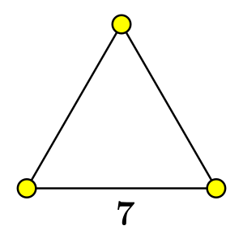 | 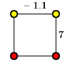 |
定理 35. 在一个 level 等于 \(l\) 的图中删去任何 \(l+1\) 个顶点后，剩下的必然是一些有限的子图。
证明：对 \(l\) 归纳。当 \(l=0\) 时，根据 前面介绍过的事实，在一个有限或者仿射的图里面删去一个顶点剩下的一定都是有限子图，所以结论成立。
假设结论对所有小于 \(l\) 的正整数成立，考虑 \(l\) 的情形。用反证法。
不妨设删去 \(\{i_1,\ldots,i_{l+1}\}\) 这 \(l+1\) 个顶点后得到的不都是有限子图，那么剩下的部分中某个连通分支必然是仿射的。不妨设 \(\Gamma-\{i_1,\ldots,i_{l+1}\}=\Gamma'\cup\Gamma''\)，其中 \(\Gamma'\) 是一个仿射的连通分支，\(\Gamma''\)（可能为空集）和 \(\Gamma'\) 之间没有边相连。
由于 \(\Gamma\) 是连通的，所以 \(\Gamma'\) 必然和 \(\{i_1,\ldots,i_{l+1}\}\) 中某个顶点有边连接，不妨设为 \(i_{l+1}\)：
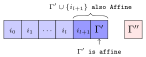
由于 \(\Gamma\) 的 level 是 \(l\)，所以 \(\{i_{l+1}\}\cup\Gamma'\subseteq\Gamma-\{i_1,\ldots,i_l\}\) 是一个仿射的连通子图，这个仿射子图删除 \(i_{l+1}\) 后得到的 \(\Gamma'\) 仍然是仿射的，这与 \(l=0\) 的情形矛盾，所以结论得证。\(\blacksquare\)
本节来证明 level 1 的群都是双曲的。
首先是一个定义：
定义：
引理 36. 如果 \(\Gamma\) 的 level 大于等于 1，并且不是双曲的，则 \(V\) 中存在两个互相正交的向量 \(u,v\) 满足 \((u,u)<0\) 和 \((v,v)=0\)。
证明：由于 \(\Gamma\) 的 level 大于等于 1，所以 \((\cdot,\cdot)\) 不可能是正定或者半正定的，显然也不可能是负定/半负定的（因为所有根 \(\alpha\) 的范数都是 1），所以 \((\cdot,\cdot)\) 的正负惯性指数都非 0。如果 \(W\) 不是双曲的，那么有两种可能：
情形 1 可以取 \(V\) 的一组正交基包含两个向量 \(u,v\) 满足 \((u, u)=-1\) 和 \((v,v)=0\)。情形 2 可以取 \(V\) 的一组正交基包含三个向量 \(x,y,z\) 满足 \((x,x)=1\) 和 \((y, y)=(z,z)=-1\)，然后取 \(u=z\) 和 \(v=x+y\)，则 \(u,v\) 正交且 \((u,u)=-1,\,(v,v)=0\)。\(\blacksquare\)
定理 37 (George Maxwell (1982)). 如果 \(\Gamma\) 的 level 是 1，则 \(\Gamma\) 是双曲的。所有的基本权都不是实的并且两两分离。
证明：首先注意到 \(\Gamma\) 的 level 是 1 蕴含了 \(\Gamma\) 是连通的，若不然，设 \(\Gamma=\Gamma_1\cup\cdots\cup\Gamma_k\) 是多于一个连通分支的并，则每个分支 \(\Gamma_i\) 作为删去其它分支后剩下的子图必须都是有限或者仿射的，但这导致 \(\Gamma\) 的 level 是 0，矛盾。
我们需要证明三件事情：
先证明 1。用反证法，如果 \(\Gamma\) 的 level 是 1 但不是双曲的，则根据 引理 36 我们可以取两个正交的非零向量 \(u,v\) 满足 \((u,u)<0,\, (v,v)=0\)。
我们有如下两个断言：
我们把这两个断言的证明放在后面，先承认它们是正确的，用它们来导出矛盾：
取 \(s\in S\) 使得 \(v_s\ne 0\)，则 \(u'=v_su-u_sv\) 满足 \((u',u')=v_s^2(u,u)<0\) 且 \(u'\) 的 \(\alpha_s\) 项的系数 \(u'_s=0\)。但根据断言 1，\(u'\) 的系数必须非零且同号，这就导致了矛盾，所以 \(\Gamma\) 必然是双曲的，从而结论 1 成立。
再来证明结论 2。
注意到对任何 \(s\in S\)，由于子图 \(\Gamma\setminus\{s\}\) 的 level 等于 0，所以 \({\rm span}\{\alpha_t,t\ne s\}\) 是有限或者仿射的 \(n-1\) 维子空间。它的正交补显然是 \(\omega_s\) 张成的一维子空间 \(\mathbb{R}\omega_s\)，再结合 \((\cdot,\cdot)\) 是双曲的我们有 \((\omega_s,\omega_s)\leq 0\)，所以 \(\{\omega_s\}_{s\in S}\) 都不是实的。
再来证明结论 3。
设 \(\omega_s=\sum_{t\in S}c_t\alpha_t\)，两边用 \(\omega_t\) 作内积不难看出 \(c_t=(\omega_s,\omega_t)\)，所以
\[\omega_s = (\omega_s,\omega_s)\alpha_s + \sum_{t\ne s} (\omega_s,\omega_t)\alpha_t.\]
结论 2 中已经证明了必然有 \((\omega_s,\omega_s)\leq0\)。根据断言我们有：
总之我们说明了对任何 \(s\ne t\) 都有 \((\omega_s,\omega_t)<0\)。此外二维子空间 \(U={\rm span}\{\omega_s,\omega_t\}\) 的正交补是 \(U^\bot={\rm span}\{\alpha_{k},\,k\ne s,t\}\)，根据 定理 35 \(U^\bot\) 是正定的，所以 \(U\) 必然是双曲的，从而 \(\{\omega_s,\omega_t\}\) 是分离的。
最后我们来给出断言 1 和 2 的证明。这两个断言的证明并不困难，但是比较琐碎。
首先是断言 1 的证明。记
\[I_+=\{s\in S\mid u_s>0\},\quad I_-=\{s\in S\mid u_s<0\},\quad I_0=\{s\in S\mid u_s=0\}.\] 并记 \(u_+=\sum_{s\in I_+}u_s\alpha_s\)，\(u_-=\sum_{t\in I_-}u_t\alpha_t\)，则 \(u=u_++u_-\) 且 \[(u,u)=(u_+,u_+) + (u_-,u_-) + 2(u_+,u_-)<0.\] 但是注意到 \[(u_+, u_-)=\sum_{s\in I_+}\sum_{t\in I_-}\underbrace{u_s}_{>0}\underbrace{u_t}_{<0}\underbrace{(\alpha_s,\alpha_t)}_{\leq0}\geq 0.\] 所以 \((u_+, u_+) < 0\) 和 \((u_-, u_-)<0\) 中至少有一个成立，不妨设 \((u_+, u_+)<0\)。如果 \(I_-\cup I_0\) 不是空集，那么 \(I_+\) 作为从 \(\Gamma\) 中删去 \(I_-\cup I_0\) 后得到的真子图包含 time-like 的向量 \(u_+\)，这与 \(\Gamma\) 的 level 等于 1 矛盾。所以 \(I=I_+\)，即所有系数 \(u_s\) 都大于 0。相应地如果是 \((u_-,u_-)<0\) 的话则所有 \(u_s\) 都小于 0。
对断言 2 我们仍然采用类似的记号，记 \[I_+=\{s\in S\mid v_s>0\},\quad I_-=\{s\in S\mid v_s<0\},\quad I_0=\{s\in S\mid v_s=0\}.\] 并记 \(v_+=\sum_{s\in I_+}v_s\alpha_s\)，\(v_-=\sum_{t\in I_-}v_t\alpha_t\)，则同样有 \((v_+,v_-)\geq0\)。
我们想证明 \(|I_0|\leq1\)，并且 \(I_+\) 和 \(I_-\) 中必有一个是空集。
如果 \(|I_0|\geq2\)，那么 \((v, v)=0\) 说明删除 \(I_0\) 以后得到的子图不是有限的，这与 \(\Gamma\) 的 level 是 1 和 定理 35 矛盾。所以 \(|I_0|\leq 1\)。
如果 \(I_+,\,I_-\) 都不是空集的话，则 \(v_+,v_-\) 都非零，并且必然有 \((v_+, v_+)\geq0\) 且 \((v_-, v_-)\geq0\)，否则删掉 \(I_+\) 或者 \(I_-\) 以后剩下的子图不是有限或者仿射的，与 \(\Gamma\) 的 level 是 1 矛盾。然而 \[0=(v, v) = (v_+,v_+) + (v_-,v_-) + 2(v_+,v_-).\] 三个非负数的和等于 0，只能是 \((v_+,v_+) = (v_-,v_-) =(v_+, v_-)=0\)。现在分情况讨论：
总之 \(I_+\) 和 \(I_-\) 必有一个是空集，断言 2 得证。
至此定理得证。\(\blacksquare\)
推论 38. 若 \(W\) 的 level 为 1，则 Tits 锥的闭包 \(\overline{ \mathcal{C} }\) 等于 \(\mathcal{Q}_+\) 或者 \(\mathcal{Q}_-\) 之一（加上原点）。
证明：由于 level 1 的群是双曲的，根据 推论 34，\(\overline{ \mathcal{C} }\) 包含 \(\mathcal{Q}\) 的一个连通分支，不妨设为 \(\overline{ \mathcal{C} }\supset\mathcal{Q}_+\)。还要再证明反向的包含关系。为此只要证明 \(\overline{ \mathcal{C} }\subset\mathcal{Q}\) 和 \(\overline{ \mathcal{C} }\cap\mathcal{Q}_-=\emptyset\)。
根据 定理 37，所有的基本权 \(\{\omega_s\}\) 都不是实的且两两分离，所以它们都属于 \(\mathcal{Q}\)。对任意 \(x\in\overline{\mathcal{D}}\)，设 \(x=\sum_{s\in S}c_s\omega_s\)，其中每个 \(c_s\geq0\)，则 \[(x,x)=\sum_{s,t\in S}c_sc_t\underbrace{(\omega_s,\omega_t)}_{\leq0}\leq0.\] 即 \(\overline{\mathcal{D}}\subset\mathcal{Q}\)。\(W\) 作为正交变换群保持 \(\mathcal{Q}\) 不变，所以 \(\mathcal{C}=\bigcup\limits_{w\in W}w\overline{\mathcal{D}}\subset\mathcal{Q}\)，从而 \(\overline{ \mathcal{C} }\subset\mathcal{Q}\)。
还需要说明 \(\overline{ \mathcal{C} }\cap\mathcal{Q}_-=\emptyset\)。首先注意到 \(\mathcal{C}^\ast\) 必然包含某个 time-like 的向量 \((z,z)<0\)。否则根据 推论 30 \(\mathcal{C}^\ast\) 中的非零向量都是 light-like 的。由于 \((\cdot,\cdot)\) 是双曲的，\(\mathcal{C}^\ast\) 不能包含两个线性无关的 light-like 的向量，所以 \(\mathcal{C}^\ast\) 由一个 light-like 的向量 \(\delta\) 生成。取对偶得到 \(\overline{ \mathcal{C} }=\{v\in V\mid (v,\delta)\geq0\}\)，这是一个半空间，显然包含 space-like 的向量，这与 \(\overline{ \mathcal{C} }\subset\mathcal{Q}\) 矛盾。所以我们确实可以取 \(z\in\mathcal{C}^\ast\) 满足 \((z,z)<0\)。显然 \(z\in\mathcal{Q}_-\)，于是对任何 \(x\in\mathcal{Q}_-\) 有 \((z,x)<0\)，而 \((z,\overline{ \mathcal{C} })\geq0\)，从而确实有 \(\overline{ \mathcal{C} }\cap\mathcal{Q}_-=\emptyset\)。\(\blacksquare\)
下面的结论来自 George Maxwell (1989)。
命题 39. 设 \(s\in S\) 使得如下条件成立：
记 \(I=S\setminus\{s\}\)，则对任意的 \(p\in\overline{\mathcal{D}}\) 都有 \(\omega_s\in\overline{ \mathrm{cone}(\bigcup_{w\in W_I}wp) }\)。
注记： 注意这里没有要求 \(W\) 必须是双曲的，也没有限制 \(W\) 的 level。
当 \(W\) 的 level 是 1 时，若 \(\omega_s\) 是一个位于双曲空间边界上的理想顶点，则命题的条件都满足。这时经过 \(\omega_s\) 的那些镜面生成的椭圆子群会把基本区域无限压缩到 \(\omega_s\) 附近，如下图所示：
证明：由已知子空间 \(V_I=\mathrm{span}\{\alpha_t,\,t\ne s\}\) 是仿射的，并且 \(\mathrm{rad}(V_I)\) 是一维的。由 \[\omega_s = \underbrace{(\omega_s,\omega_s)}_{=0}\alpha_s + \sum_{t\ne s}(\omega_s, \omega_t)\alpha_t = \sum_{t\ne s}(\omega_s, \omega_t)\alpha_t\in V_I,\] 所以 \(\mathbb{R}\omega_s=\mathrm{rad}(V_I)\)。于是 \(W_I\) 保持 \(\omega_s\) 不动，即 \[\mathbb{R}\omega_s\xrightarrow{\ W_I - 1\ } = 0.\] 从而 \(W_I\) 同样作用在商空间 \(V_I/\mathbb{R}\omega_s\) 上，此作用给出了一个同态 \(W_I\to\mathrm{GL}(V_I/\mathbb{R}\omega_s)\)。令 \(K\) 为此同态的核，则对任何 \(w\in K\)， \[w(v + \mathbb{R}\omega_s) = v + \mathbb{R}\omega_s,\quad v\in V_I.\] 即 \[V_I\xrightarrow{\ K - 1\ }\mathbb{R}\omega_s\xrightarrow{\ W_I - 1\ } = 0.\] 由于 \(K\leqslant W_I\)，所以 \[V_I\xrightarrow{\ K - 1\ }\mathbb{R}\omega_s\xrightarrow{\ K-1\ }0.\] 即 \((K-1)^2\) 在整个 \(V_I\) 上恒为 0。
更进一步，对任何 \(w\in K\)，\(w\alpha_s\) 形如 \(w\alpha_s=\alpha_s+\sum\limits_{t\ne s}c_t\alpha_t\)，所以 \((w-1)\alpha_s\in V_I\)，从而 \[V\xrightarrow{\ K-1\ } V_I\xrightarrow{\ K - 1\ }\mathbb{R}\omega_s\xrightarrow{\ K-1\ }0.\] 即 \((K-1)^2V\subset\mathbb{R}\omega_s\)，\((K-1)^3V\equiv0\)。
如果 \(p\) 是 \(\omega_s\) 的正倍数，则结论是平凡的。否则取 \(w\in K\) 且 \(w\ne 1\)，由于 \(w\) 在 \(V_I\) 上不是恒等变换，所以存在 \(t\in I\) 使得 \(w\alpha_t\ne\alpha_t\)。设 \(w\alpha_t=\alpha_t+a\omega_s,\,a\ne 0\)，并构造换位子 \(w_1=twtw^{-1}\in K\)，则由 \((K-1)^2V\subset\mathbb{R}\omega_s\) 有 \((w_1-1)^2p=b\omega_s,\,b\in\mathbb{R}\)。我们来计算 \(b\)。
记 \(\beta = w\alpha_t=\alpha_t+a\omega_s\)，则 \(wtw^{-1}=s_\beta\)，所以 \[\begin{align*} s_\beta(p)&=p - 2(p,\beta)\beta\\ &=p-2(p,\beta)(\alpha_t+a\omega_s)\\ &=p-2(p,\beta)\alpha_t-c\omega_s\\ &=p-2(p,\alpha_t+a\omega_s)\alpha_t-c\omega_s\\ &=p-2(p,\alpha_t)\alpha_t- 2a(p, \omega_s)\alpha_t - c\omega_s\\ &=t(p) - 2a(p, \omega_s)\alpha_t - c\omega_s. \end{align*}\] 其中 \(c=2(p,\alpha_t+a\omega_s)a\) 是一个实数。于是 \[(w_1-1)p=ts_\beta(p)-p =t^2(p) - 2a(p, \omega_s)t(\alpha_t) - ct(\omega_s)=2a(p,\omega_s)\alpha_t - c\omega_s.\label{eq:wp1}\tag{1}\] 其中我们利用了 \(t(\omega_s)=\omega_s\)。继续由于 \((w_1-1)\omega_s=0\)，所以 \[(w_1-1)^2p = 2a(p,\omega_s)(w_1-1)\alpha_t.\label{eq:wp2}\tag{2}\] 对于 \((w_1-1)\alpha_t\)，我们可以在 \((\ref{eq:wp1})\) 式中取 \(p=\alpha_t\)，得到 \[(w_1-1)\alpha_t=2a\underbrace{(\alpha_t,\omega_s)}_{=0}\alpha_t -c\omega_s=-c\omega_s= -2(\alpha_t,\alpha_t+a\omega_s)a\omega_s=-2a\omega_s.\] 将其代入 \((\ref{eq:wp2})\) 中我们得到 \((w_1-1)^2p=-4a^2(p,\omega_s)\omega_s\)，即 \(b=-4a^2(\omega_s,p)\)。由于 \(p\in\overline{\mathcal{D}}=\mathrm{cone}(\Delta^\ast)\) 是 \(\Delta^\ast\) 的非负线性组合，设 \(p=\sum c_t\omega_t,\,c_t\geq0\)，则 \((p,\omega_s)=\sum_{t\ne s}c_t(\omega_s,\omega_t)\)。又由于 \(p\) 与 \(\omega_s\) 不共线，所以至少有一个 \(t\ne s\) 满足 \(c_t>0\)。而已知对任何 \(t\ne s\) 有 \((\omega_s,\omega_t)<0\)，所以 \((\omega_s, p)<0\)，从而 \(b>0\)。
最后利用 \((w_1-1)^3=0\) 和 \((w_1-1)^2p=b\omega_s\) 我们得到对任何 \(N\geq 1\) 有 \[w_1^N(p)=(1 + w_1-1)^N(p)= p + \binom{N}{1}(w_1-1)(p) + \binom{N}{2}b\omega_s,\] 可见 \(\lim\limits_{N\to\infty}\dfrac{w_1^Np}{\binom{N}{2}b} = \omega_s\)，即得所证。\(\blacksquare\)
本节我们在上一小节的结论中再进一步，证明 level 2 的群也是双曲的。论证会更加繁琐一些。
定理 40. level 等于 2 的群都是双曲的，所有的基本权两两分离。\(\omega_s\in\Delta^\ast\) 是实的当且仅当 \(T\setminus\{s\}\) 的 level 等于 1，且对这样的 \(\omega_s\) 有 \(0<(\omega_s,\omega_s)\leq 1\)。
证明：我们先来证明 \(\Gamma\) 是双曲的。
如果 \(\Gamma\) 是不连通的，则 \(\Gamma\) 必须是一个 level 为 1 的子图和一个独立顶点的并，由于 定理 37 已经证明了 level 1 的群是双曲的，再加上一个独立顶点仍然是双曲的，所以 \(\Gamma\) 是双曲的。于是我们不妨假设 \(\Gamma\) 是连通的。
再针对 \(\Gamma\) 的顶点个数是否大于 3 分别处理。在 \(\Gamma\) 只包含 3 个顶点的情形，\(\Gamma\) 的 level 是 2 说明其必然有一条边的 Vinberg 标号小于 -1。不妨设 \((\cdot,\cdot)\) 的 Gram 矩阵形如 \[\begin{pmatrix}1&a&b\\a&1&c\\b&c&1\end{pmatrix}.\] 其中 \(a,\,b,\,c\leq0\) 且 \(a < -1\)。这个矩阵的行列式是 \[1 - a^2 + 2abc - b^2-c^2 = 1-a^2 + 2bc(a+1)-(b+c)^2<0.\] 由于矩阵的迹等于 3，所以其符号必然是 \((2, 1)\)，从而是双曲的。
再处理 \(\Gamma\) 包含至少 4 个顶点的情形。
仍然根据 引理 36，如果 \(\Gamma\) 不是双曲的，则我们可以取两个非零且正交的向量 \(u,v\) 满足 \((u, u)<0,\,(v, v)=0\)。
我们也有如下两个断言：
我们仍然把断言的证明放在后面，先承认它们是正确的并完成证明。
由于 \(u\) 的系数 \(\{u_s\}\) 中至多只有一个是 0，\(v\) 的系数 \(\{v_s\}\) 中至多只有两个是 0，而 \(|\Gamma|\geq4\)，所以存在下标 \(i\) 使得 \(u_i,\,v_i\) 均不为 0。于是 \(u'=v_iu-u_iv\) 仍然满足 \(u'\) 与 \(v\) 正交和 \((u',u')<0\)，但是它的下标 \(i\) 的系数 \(u'_i=0\)，所以我们不妨一开始就取 \(u\) 为 \(u'\)，于是 \(u\) 有一个系数 \(u_i=0\)，其它系数都非 0 且同号，不妨假设这些非零系数都大于 0。
现在我们已经有了 \(v_i\ne0\)，由于 \(\{v_s\}\) 中至多只有两个为 0，而 \(|\Gamma|\geq4\)，所以 \(\{v_j,\,j\ne i\}\) 中至少还有一个非零。
如果 \(\{v_j,\,j\ne i\}\) 中仅有一个非零，则这时必有 \(|\Gamma|=4\) 且 \(v\) 形如 \(v=v_i\alpha_i + v_j\alpha_j\)。根据 定理 35 \({\rm span}\{\alpha_i,\alpha_j\}\) 是有限/或者仿射的，但是由于此平面包含 \((v,v)=0\)，所以是仿射的，从而 \((\alpha_i,\alpha_j)=-1\)。我们可以不妨把 \(v\) 取为 \(v=\alpha_i+\alpha_j\)。
| \(i\) | \(j\) | \(k\) | \(m\) | |
|---|---|---|---|---|
| \(u\) | 0 | \(>0\) | \(>0\) | \(>0\) |
| \(v\) | \(\ne0\) | \(\ne0\) | 0 | 0 |
\(u_i=0\) 说明 \(u\) 形如 \(u=u_j\alpha_j+u_k\alpha_k+u_m\alpha_m\)。 由 \((u,v)=0\) 有 \[(u, v)=(u_j\alpha_j+u_k\alpha_k+u_m\alpha_m, v)=(u_k\alpha_k+u_m\alpha_m, \alpha_i+\alpha_j)=0,\] 由于 \(\{\alpha_k,\alpha_m\}\) 和 \(\{\alpha_i,\alpha_j\}\) 之间的内积都小于等于 0，而 \(u_k,u_m\) 大于 0，这说明 \[(\alpha_k,\alpha_i) = (\alpha_k,\alpha_j) =(\alpha_m, \alpha_i) =(\alpha_m,\alpha_j)=0.\] 即顶点 \(\{i, j\}\) 与 \(\{k,m\}=\Gamma\setminus\{i,j\}\) 是不连通的，与 \(\Gamma\) 连通矛盾。
如果 \(\{v_j,\,j\ne i\}\) 至少有两个非零，则可以取下标 \(j,k\) 使得 \(v_j/u_j\ne0,\,v_k/u_k\ne0\)。
| \(i\) | \(j\) | \(k\) | \(\cdots\) | |
|---|---|---|---|---|
| \(u\) | 0 | \(>0\) | \(>0\) | \(>0\) |
| \(v\) | \(<0\) | \(\ne0\) | \(\ne0\) | \(\cdots\) |
由于 \(v_i\ne0\)，通过选择 \(v\) 或者 \(-v\) 可以不妨设 \(v_i<0\)，并不妨设 \(v_j/u_j\leq v_k/u_k\)。记 \(a=v_j/u_j\)，则 \(u'=au-v\) 满足 \((u',u')<0\)，但是 \(u'_i=-v_i>0\)，\(u'_j=0\)，\(u'_k\leq 0\)，这与上面断言中 \(u'\) 的系数除去至多一个例外，剩下的均非零且同号矛盾。
至此我们证明了当 \(\Gamma\) 的 level 等于 2 时是双曲的。
我们接下来证明所有的基本权 \(\{\omega_s\}\) 是两两分离的。
仍然利用恒等式
\[\begin{align*} \omega_s &= (\omega_s,\omega_s)\alpha_s + \sum_{t\ne s} (\omega_s,\omega_t)\alpha_t,\\ 1 &= (\omega_s,\omega_s) + \sum_{t\ne s} (\omega_s,\omega_t)\underbrace{(\alpha_t,\alpha_s)}_{\leq0}.\end{align*}\]
并分情况讨论：
如果 \((\omega_s,\omega_s)\leq0\)，则根据第二个等式，\(\{(\omega_s,\omega_t)\}_{t\ne s}\) 中必然至少有一个严格小于 0，从而根据断言，在 \(\{(\omega_s,\omega_t)\}_{t\ne s}\) 中至多有一个为正。但我们将证明这不可能。否则不妨设 \(k\ne s\) 使得 \((\omega_s,\omega_k)>0\)。在第一个等式两边用 \(\alpha_k\) 内积得到 \[0=(\omega_s,\omega_s)(\alpha_s,\alpha_k) +\sum_{t\ne s,k} (\omega_s,\omega_t)(\alpha_t,\alpha_k) + (\omega_s,\omega_k).\] 上面的和项前两个都非负，最后一个大于 0，矛盾。所以所有的 \(\{(\omega_s,\omega_t)\}_{t\ne s}\) 都非正。
如果 \((\omega_s,\omega_s)>0\)，则其正交补 \(U=\omega_s^\bot={\rm span}\{\alpha_t,\,t\ne s\}\) 是双曲的，即 \(\Gamma\setminus\{s\}\) 的 level 是 1。考虑 \(\alpha_s\) 在 \(U\) 上的正交投影 \(\alpha_s'=\alpha_s-\omega_s/(\omega_s,\omega_s)\)。\(\alpha_s'\) 满足对任何 \(t\ne s\) 有 \((\alpha_s',\alpha_t)\leq0\)，从而 \(-\alpha_s'\) 属于 \(\Gamma\setminus\{s\}\) 的基本区域的闭包 \(\overline{\mathcal{D}}_s\)，而 定理 37 和 推论 38 已经证明了 \(\Gamma\setminus\{s\}\) 的 Tits 锥中的点都是 time-like 或者 light-like 的，从而 \((\alpha_s',\alpha_s')= 1-(\omega_s,\omega_s)^{-1}\leq0\)，即 \(0<(\omega_s,\omega_s)\leq1\)。又由于 推论 38 证明了 \(\Gamma\setminus\{s\}\) 作为不可约的 level 1 的图，其基本区域的闭包 \(\overline{\mathcal{D}}_s\) 属于 \(\mathcal{Q}\) 的同一个连通分支（此 \(\mathcal{Q}\) 是 \({\rm span}\{\alpha_t,t\ne s\}\) 中 \((v,v)\leq0\) 构成的集合），从而 \(-\alpha_s'\) 和 \(\{\omega_t,t\ne s\}\) 都属于此分支，所以对任何 \(t\ne s\) 有 \((-\alpha_s',\omega_t)=(\omega_s,\omega_t)/(\omega_s,\omega_s)\leq0\)，即 \((\omega_s,\omega_t)\leq 0\)，于是所有的 \(\{(\omega_s,\omega_t)\}_{t\ne s}\) 都非正。
总之我们证明了不论 \((\omega_s,\omega_s)\) 的符号如何，它与其它的基本权的内积 \((\omega_s, \omega_t)\) 都非正。
又因为对任何 \(s,t\)，\(\Gamma\setminus\{s,t\}\) 是有限或者仿射的，所以其正交补，即 \(\{\omega_s,\omega_t\}\) 张成的二维子空间不是正定的，从而 \(\{\omega_s\}\) 之间是两两分离的。
注记： 我们需要考虑 \(\alpha_s\) 的投影 \(\alpha_s'\) 是因为 \(\alpha_s\) 不属于 \({\rm span}\{\alpha_t,\,t\ne s\}\)，无法直接根据 \((\alpha_s,\alpha_t)\leq0\) 得出 \(\alpha_s\) 属于 \(\Gamma\setminus\{s\}\) 的基本区域的闭包。
最后我们来补上断言的证明。
首先是断言 1 的证明。和 level 1 那里的证明一样，我们仍然记 \[I_+=\{s\in S\mid u_s>0\},\quad I_-=\{s\in S\mid u_s<0\},\quad I_0=\{s\in S\mid u_s=0\}.\] 并记 \(u_+=\sum_{s\in I_+}u_s\alpha_s\)，\(u_-=\sum_{t\in I_-}u_t\alpha_t\)。则 \((u,u)<0\) 和 \((u_+,u_-)\geq0\) 说明 \((u_+, u_+) < 0\) 和 \((u_-, u_-)<0\) 中至少有一个成立。
如果 \(|I_0|\geq2\)，则 \((u,u)<0\) 与 \(\Gamma\) 的 level 是 2 矛盾。所以 \(|I_0|\leq 1\)。
总之我们证明了除去至多一个系数之外，其它的系数均非 0 且同号。断言 1 得证。
对断言 2，类似地我们记 \[I_+=\{s\in S\mid v_s>0\},\quad I_-=\{s\in S\mid v_s<0\},\quad I_0=\{s\in S\mid v_s=0\}.\] 并记 \(v_+=\sum_{s\in I_+}v_s\alpha_s\)，\(v_-=\sum_{t\in I_-}v_t\alpha_t\)。
首先 \(|I_0|\leq2\) 是显然的，否则 \((v,v)=0\) 与 \(\Gamma\) 的 level 是 2 和 定理 35 矛盾。
至此断言 2 得证，从而定理得证。\(\blacksquare\)
定理 41. 下面两点是等价的：
证明：
\(1\Rightarrow 2\)：只要再证明对任何 \(w\in W\)，以及两个基本权 \(\omega_i,\,\omega_j\)，如果有 \(\omega_i\ne w(\omega_j)\)，则 \((\omega_i,w(\omega_j))\leq0\)，并且二维子空间 \(\{\omega_i,w(\omega_j)\}\) 不是正定的。
对长度 \(l(w)\) 归纳：\(l(w)=0\) 的情形在 定理 37 和 定理 40 中已经证明。下面假设 \(l(w)>0\)，且结论对所有长度 \(<l(w)\) 的群元素成立。
如果存在 \(k\ne i\) 使得 \(l(s_kw)<l(w)\)，则 \(\omega_i=s_k(\omega_i)\ne s_kw(\omega_j)\)，由归纳假设 \(\{\omega_i,s_k(\omega_j)\}\) 是分离的，从而 \(\{\omega_i,\omega_j\}\) 作为 \(\{\omega_i,s_k(\omega_j)\}\) 的正交变换得到的向量组也是分离的。
如果对任何 \(k\ne i\) 都有 \(l(s_kw)>l(w)\)，则 \(w\) 的任一既约表示必然以 \(s_i\) 开头，即 \(w\) 形如 \(w=s_iw'\) 且 \(l(w)>l(w')\)。从而 \[(\omega_i,w(\omega_j))=(s_i(\omega_i), w'(\omega_j))=(\omega_i, w'(\omega_j))-2(\alpha_i,w'(\omega_j)).\]
为了证明 \({\rm span}\{\omega_i,w(\omega_j)\}\) 不是正定的，用反证法。我们先插入一个简单的线性代数引理，它的证明很简单，我这里省略。
引理：在一个内积空间中，设 \(x\) 是一个向量，\(U\) 是一个子空间，\(v\) 是 \(x\) 在 \(U\) 上的投影分量，\(U_1\) 是 \(v\) 在 \(U\) 中的正交补，则 \(U_1=x^\bot\cap U\)。
回到反证法。如果二维子空间 \({\rm span}\{\omega_i,w(\omega_j)\}\) 是正定的，设 \(v\) 是 \(w(\omega_j)\) 在 \[U=\omega_i^\bot={\rm span}\{\alpha_k,\,k\ne i\}\] 上的投影分量，\(U_1\) 是 \(v\) 在 \(U\) 中的正交补，则 \[U_1=w(\omega_j)^\bot\cap U=w(\omega_j)^\bot\cap\omega_i^\bot=\{\omega_i,w(\omega_j)\}^\bot\] 是一个双曲子空间，所以 \(v\in U_1^\bot\) 是 space-like 的：\((v,v)>0\)。然而对任何 \(k\ne i\)，由于 \(\alpha_k\in\omega_i^\bot\) 所以 \((v,\alpha_k) = (w(\omega_j),\alpha_k)=(\omega_j, w^{-1}\alpha_k)\)。而 \(l(s_kw)>l(w)\) 说明 \(w^{-1}\alpha_k\in\Phi^+\)，所以 \((\omega_j, w^{-1}\alpha_k)\geq0\)，即 \((v,\alpha_k)\geq0\)。这对任何 \(k\ne i\) 都成立所以 \(v\) 属于 \(\Gamma\setminus\{i\}\) 的基本区域的闭包。但是根据反证假设 \(\omega_i\) 是实的，所以 \(\Gamma\setminus\{i\}\) 的 level 是 1，它的基本区域的闭包中的点都是 time-like 或者 light-like 的，从而必须有 \((v, v)\leq0\)，这与 \(v\) 是 space-like 的矛盾。
\(2\Rightarrow 1\)：由于内积 \((\cdot,\cdot)\) 是双曲的，而子空间 \({\rm span}\{\omega_i,\omega_j\}\) 不是正定的，所以其正交补是正定或者半正定的。于是 \(\Gamma\setminus\{i,j\}\) 是有限或者仿射的，从而 \(\Gamma\) 的 level 等于 1 或 2。
注记： 这里考虑 \(w(\omega_j)\) 的投影分量 \(v\) 的理由同样是因为 \(w(\omega_j)\) 未必属于 \({\rm span}\{\alpha_k,\,k\ne i\}\)，所以由 \((w(\omega_j),\alpha_k)\geq0\) 无法得出 \(w(\omega_j)\) 属于 \(\Gamma\setminus\{i\}\) 的基本区域。
在这一章中，我们都约定 \(V=\mathbb{R}^{n+1,1}\) 是 \(n+2\) 维的 Lorentzian 空间，\(e_1,e_2,\ldots,e_{n+2}\) 是 \(V\) 的一组标准正交基，即在这组基下内积的 Gram 矩阵为 \[\begin{pmatrix}I_{n+1} &\\ & -1\end{pmatrix}.\] 令 \[e_0=\frac{1}{2}(e_{n+2}-e_{n+1}),\quad e_\infty=\frac{1}{2}(e_{n+2}+e_{n+1}).\] 则 \(\{e_1,\ldots,e_n,e_0,e_\infty\}\) 也构成 \(V\) 的一组基，\((\cdot,\cdot)\) 在这组基下的 Gram 矩阵为 \[\begin{pmatrix}I_n&&\\&0& -\frac{1}{2}\\&-\frac{1}{2}&0\end{pmatrix}.\] 任何 \(v\in V\) 可以写成 \(v=\mathbf{x}+ ae_0 + be_\infty\) 的形式，其中 \(\mathbf{x}\in{\rm span}\{e_1,\ldots,e_n\}\) 是一个 Euclidean 度量空间中的向量，\(a,b\in\mathbb{R}\)。所以 \(v\) 可以用一个三元组 \(v=(\mathbf{x},a,b)\) 来表示，并且两个三元组之间的内积为： \[((\mathbf{x},a,b), (\mathbf{y},c,d)) = (\mathbf{x},\mathbf{y})-\frac{1}{2}(ad+bc).\] 这种表示方式在处理球面时会更加方便。
对 \(v\in\mathbb{R}^{n+1,1}\)，我们约定用 \([v]\) 表示 \(v\) 在射影空间 \(\mathrm{P}(\mathbb{R}^{n+1,1})\) 中的等价类。
定义： 定义光锥 (light cone/null cone) 为 \[\mathbb{L}^{n+1}= \{v\in \mathbb{R}^{n+1,1}\mid(v,v)=0\}.\] 以及 \[\mathrm{P}(\mathbb{L}^{n+1})=\{[v]\mid v\in\mathbb{L}^{n+1}-\{0\}\}.\] \(\mathrm{P}(\mathbb{L}^{n+1})\) 可以看作是 \(\mathbb{L}^{n+1}\) 中所有直线组成的集合。
在除去原点以后，\(\mathbb{L}^{n+1}\) 同样由上下两个连通分支组成。记 \(\mathbb{L}^{n+1}_+\) 是其上半分支，则 \(\mathrm{P}(\mathbb{L}^{n+1})\) 也可以写成 \(\mathrm{P}(\mathbb{L}^{n+1})=\mathbb{L}^{n+1}_+/\mathbb{R}_{>0}\)。
我们知道 \(\overline{\mathbb{R}^n}=\mathbb{R}^n\cup\{\infty\}\) 和单位球 \(S^n=\{x_1^2+x_2^2+\cdots+x_{n+1}^2=1\}\subset\mathbb{R}^{n+1}\) 在球极投影下是一一对应的。我们来说明它们分别和 \(\mathrm{P}(\mathbb{L}^{n+1})\) 是一一对应的，并且当 \(x\in\overline{\mathbb{R}^n}\) 和 \(y\in S^n\) 是球极投影下对应的点时，它们在 \(\mathrm{P}(\mathbb{L}^{n+1})\) 中对应的是同一个点。
具体的对应如下图所示：\(S^n\) 对应的是图中的红圈，它是 \(\mathbb{L}^{n+1}_+\) 与超平面 \(v_{n+2}=1\) 相交的截线；\(\mathbb{R}^n\) 对应的是图中的 horosphere，它是 \(\mathbb{L}^{n+1}_+\) 和超平面 \(v_{n+2}-v_{n+1}=1\) 相交的截线；\(\infty\) 对应的是 \(e_\infty\)，它不在 horosphere 上。
我们来计算验证一下。
设 \(\mathbf{y}\in\mathbb{R}^{n+1}\)，记 \(|\mathbf{y}|\) 为 \(\mathbf{y}\) 的 Euclidean 范数，则 \[\mathbf{y}\in S_n\Leftrightarrow |\mathbf{y}|=1\Leftrightarrow((\mathbf{y},1),(\mathbf{y},1))=0\Leftrightarrow(\mathbf{y},1)\in\mathbb{L}^{n+1}.\] 所以 \(S^n\) 确实可以等同于截线 \[S^n_1=\{v\in\mathbb{L}^{n+1}_+ \mid v_{n+2}=1\},\] 对应由映射 \(\jmath: S^n\to S^n_1\) \[\jmath(\mathbf{y})= \mathbf{y}+ e_{n+2}\] 给出，即 \(\jmath\) 是把 \(S^n\) 沿着 \(e_{n+2}\) 的方向整体平移 1。由于 \(\mathrm{P}(\mathbb{L}^{n+1})\) 中每个元素在 \(S^n_1\) 中有唯一代表元，所以 \[S^n\to\mathrm{P}(\mathbb{L}^{n+1}): \mathbf{y}\to [\mathbf{y}+e_{n+2}],\] 是一一对应，此即为 \(\mathrm{P}(\mathbb{L}^{n+1})\) 的第一种参数化表示。
另一方面，对 \([v]\in\mathrm{P}(\mathbb{L}^{n+1})\)，如果 \(v\) 的 \(e_0\) 分量非零，则 \(v\) 形如 \(v=(\mathbf{x},1,b),\,\mathbf{x}\in\mathbb{R}^n\)。\(v\in\mathbb{L}^{n+1}\) 说明 \(|\mathbf{x}|^2-b=0\)，即 \(b=|\mathbf{x}|^2\)，从而 \(v=(\mathbf{x},1,|\mathbf{x}|^2)\)。如果 \(v\) 的 \(e_0\) 分量为 0，则 \(v\) 形如 \(v=(\mathbf{x},0,b)\)，\(v\in\mathbb{L}^{n+1}\) 给出 \(|\mathbf{x}|^2=0\)，从而 \(\mathbf{x}=0\)，即 \(v=(0,0,b),\,b\ne 0\)，从而 \([v] = [(0,0,1)]=[e_\infty]\)。
于是我们可以定义如下从 \(\overline{\mathbb{R}^n}\) 到 \(\mathrm{P}(\mathbb{L}^{n+1})\) 的一一对应 \(\imath:\overline{\mathbb{R}^n}\to\mathrm{P}(\mathbb{L}^{n+1})\): \[ \imath(\mathbf{x})=\begin{cases}[(\mathbf{x},1,|\mathbf{x}|^2)] & \mathbf{x}\in\mathbb{R}^n,\\ [e_\infty] & \mathbf{x}= \infty. \end{cases} \] 此即为 \(\mathrm{P}(\mathbb{L}^{n+1})\) 的第二种参数化表示。
注意到形如 \((\mathbf{x},1,|\mathbf{x}|^2)\) 的点构成了 \(\mathbb{L}^{n+1}_+\) 与超平面 \(v_{n+2}-v_{n+1}=1\) 的截线 \(H_1\)： \[H_1 = \{ v\in\mathbb{L}^{n+1}\mid v_{n+2} - v_{n+1} = 1\}.\]
设 \(\mathbf{y}=y_1e_1+\cdots+y_{n+1}e_{n+1}\in S^n\)，为方便记 \(\widetilde{\mathbf{y}}=y_1e_1+\cdots+y_n\in\mathbb{R}^n\)。\(\mathbf{y}\) 在以 \(e_{n+1}\) 为北极的球极投影下对应于 \[\mathbf{x}=\begin{cases}\frac{\widetilde{\mathbf{y}}}{1-y_{n+1}} & y_{n+1}\ne1\\ \infty & y_{n+1}=1. \end{cases} \] 我们来验证 \(\jmath(\mathbf{y})\) 和 \(\imath(\mathbf{x})\) 对应的是 \(\mathrm{P}(\mathbb{L}^{n+1})\) 中的同一个点，即 \[[\mathbf{y}+ e_{n+2}] = \begin{cases}[(\mathbf{x},1,|\mathbf{x}|^2)] & y_{n+1}\ne1\\ [e_\infty] & y_{n+1}=1. \end{cases}.\]
当 \(y_{n+1}=1\) 时 \(\mathbf{y}=e_{n+1}\) 从而 \(\mathbf{y}+e_{n+2}= e_{n+1}+e_{n+2}=2e_\infty\)，这显然与 \(e_\infty\) 是射影等价的。
当 \(y_{n+1}\ne 1\) 时，\(\mathbf{y}\in S^n\) 说明 \((\widetilde{\mathbf{y}},\widetilde{\mathbf{y}})+y_{n+1}^2=1\)，即 \[|\mathbf{x}|^2=\left|\frac{\widetilde{\mathbf{y}}}{1-y_{n+1}}\right|^2 = \frac{1+y_{n+1}}{1-y_{n+1}}.\] 把 \(\mathbf{y}+e_{n+2}\) 转化为 \(\{e_1,\ldots,e_n,e_0,e_\infty\}\) 这组基下的表示： \[\mathbf{y}+e_{n+2} = \widetilde{\mathbf{y}}+ (1-y_{n+1})e_0+(1+y_{n+1})e_\infty=(\widetilde{\mathbf{y}}, 1-y_{n+1}, 1+y_{n+1}).\] 从而 \[[\mathbf{y}+e_{n+2}] = \left[\left(\frac{\widetilde{\mathbf{y}}}{1-y_{n+1}}, 1, \frac{1+y_{n+1}}{1-y_{n+1}}\right)\right] = [(\mathbf{x}, 1, |\mathbf{x}|^2)].\]
记 \(\mathcal{S}=\{v\in\mathbb{R}^{n+1,1}\mid( v,v)=1\}\) 是所有 space-like 单位向量组成的集合，我们来建立 \(\mathbb{R}^n\) 中的球/超平面和 \(\mathcal{S}\) 之间的一一对应。
设 \(B=B(\mathbf{a},r)=\{\mathbf{x}\in\mathbb{R}^n\mid |\mathbf{x}-\mathbf{a}|=|r|\}\) 是 \(\mathbb{R}^n\) 中以 \(\mathbf{a}\) 为中心，半径为 \(r\ne 0\) 的球，我们允许 \(r\) 是负数以区分 \(B\) 的内部和外部：\(r>0\) 时 \(B\) 的内部就是通常意义下满足 \(|\mathbf{x}-\mathbf{a}|< r\) 的有界集合；\(r<0\) 时 \(B\) 的内部是满足 \(|\mathbf{x}-\mathbf{a}|>|r|\) 的无界集合。球的内部和外部不过是球面镜的两侧，在反演变换下它们互相交换，所以把内部和外部统一处理是很自然的。
记 \[ k_B = \frac{\mathbf{a}+ e_0 + (|\mathbf{a}|^2 - r^2)e_\infty}{r}=\left(\frac{\mathbf{a}}{r},\frac{1}{r},\frac{|\mathbf{a}|^2-r^2}{r}\right).\] 不难验证 \(k_B\) 满足 \((k_B,k_B)=1\)，所以 \(k_B\in\mathcal{S}\)。
对 \(\mathbf{x}\in\mathbb{R}^n\)，设 \(\imath(\mathbf{x})=(\mathbf{x}, 1, |\mathbf{x}|^2)\) 是 \(\mathbf{x}\) 在 \(\mathbb{L}^{n+1}\) 的截线 \(H_1\) 中对应的点，则 \[(\imath(\mathbf{x}),k_B)=\left((\mathbf{x},1,|\mathbf{x}|^2),\left(\frac{\mathbf{a}}{r},\frac{1}{r},\frac{|\mathbf{a}|^2-r^2}{r}\right)\right)=\frac{r^2-|\mathbf{x}-\mathbf{a}|^2}{2r}.\]
于是 \(\mathbf{x}\in B\) 当且仅当 \((\imath(\mathbf{x}),k_B)=0\)，以及 \(\mathbf{x}\) 落在 \(B\) 的内部当且仅当 \((\imath(\mathbf{x}),k_B)>0\)。
注意到 \(\imath(\mathbf{x})\) 和 \(\jmath(\mathbf{x})\) 只差一个正的倍数，所以 \(\mathbf{x}\in B\) 等价于 \((\jmath(\mathbf{x}),k_B)=0\)，这是 \(S^n_1\) 与超平面 \(k_B^\bot\) 的截线，其围成的内部是 \(S^n_1\) 上的一个球帽。
当 \(B\) 是超平面时，设其方程为 \((\mathbf{n},\mathbf{x})=d\)，其中 \((\mathbf{n},\mathbf{n})=1\) 是超平面的单位法向量，\(d\in\mathbb{R}\)。我们将其对应到 \[k_B=(\mathbf{n}, 0, 2d).\] 不难验证 \((k_B,k_B)=1\)，从而 \(k_B\in\mathcal{S}\)，并且对 \(\imath(\mathbf{x})=(\mathbf{x},1,|\mathbf{x}|^2)\) 有 \[(\imath(\mathbf{x}),k_B)=(\mathbf{x},\mathbf{n})-d.\] 同理 \(\mathbf{x}\in B\) 等价于 \((\imath(x),k_B)=0\)，\(\mathbf{x}\) 属于 \(B\) 的正半空间 \((\mathbf{n},\mathbf{x})> d\) 当且仅当 \((\imath(\mathbf{x}),k_B)>0\)。
反之任何 \(k\in\mathcal{S}\) 也都唯一确定了 \(\mathbb{R}^n\) 中的某个球或者超平面。为此只要设 \(k=(\mathbf{a}, a, b)\in\mathcal{S}\)，并根据 \(a\) 是否等于 0 将 \(k\) 对应为球 \(B(\mathbf{a}/a ,1/a)\) 或者超平面 \(H(\mathbf{a}, b/2)\) 即可。
最后，我们注意到 \(k\) 和 \(-k\) 分别对应一对内外互相翻转的球。
设 \(B_1,B_2\) 是 \(\mathbb{R}^n\) 中的两个球，球心分别为 \(\mathbf{a}_1,\mathbf{a}_2\)，半径分别为 \(r_1,r_2\)。记 \[k_1=\left(\frac{\mathbf{a}_1}{r_1},\frac{1}{r_1},\frac{|\mathbf{a}_1|^2-r_1^2}{r_1}\right),\quad k_2=\left(\frac{\mathbf{a}_2}{r_2},\frac{1}{r_2},\frac{|\mathbf{a}_2|^2-r_2^2}{r_2}\right)\] 分别是它们在 \(\mathcal{S}\) 中对应的点，不难验证有 \[(k_1,k_2)=\frac{r_1^2+r_2^2 - |\mathbf{a}_1-\mathbf{a}_2|^2}{2r_1r_2}.\] 我们称如上的内积 \((k_1,k_2)\) 为 \(B_1\) 和 \(B_2\) 的 seperation。
| \((k_1,k_2)=\cos\theta\) | \((k_1,k_2)=\cosh d(\ell_1,\ell_2)\) |
| 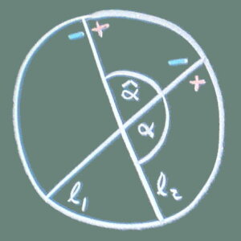 | 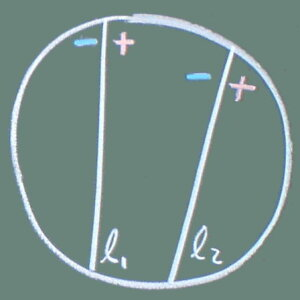 |
| \((k_1,k_2)=-\cosh d(\ell_1,\ell_2)\) | \((k_1,k_2)=-\cosh d(\ell_1,\ell_2)\) |
| 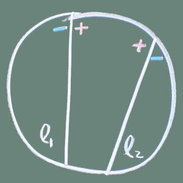 | 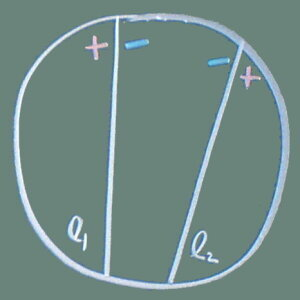 |
上面的结论同样适用于 \(B_1\) 和 \(B_2\) 中有平面的情形。例如设 \(B_1,B_2\) 相交，并且 \(B_1\) 是球面，\(B_2\) 是超平面，其方程为 \((\mathbf{x},\mathbf{n})=d\)，则 \(k_2=(\mathbf{n}, 0, 2d)\)， \[(k_1,k_2)=\frac{(\mathbf{a}_1,\mathbf{n})-d}{r_1}.\] 这时 \((k_1,k_2)\) 等于 \(B_1\) 在球面交点处的内法向量和平面法向量夹角的余弦。
此外，当 \(B_1,B_2\) 都是超平面时，\((k_1,k_2)=(\mathbf{n}_1,\mathbf{n}_2)\) 是它们法向量的夹角。
命题 42. 设 \(B_1,B_2\) 是两个球，且 \(B_1,B_2\) 的内部不相交。设 \((k_1,k_2)\) 分别是它们对应的 space-like 的单位向量，则 \((k_1,k_2)\leq-1\)。
注记： 这个命题反过来是不对的。
证明：\(B_1\) 和 \(B_2\) 内部不相交有如下几种可能：
不难验证这些都可以推出 \((k_1,k_2)\leq-1\)。
定义： 设 \(B\) 是 \(\mathbb{R}^n\) 中以 \(\mathbf{a}\) 为中心，半径为 \(r\) 的球。关于 \(B\) 的反演 \(\tau:\overline{\mathbb{R}^n}\to\overline{\mathbb{R}^n}\) 定义为 \[\tau(\mathbf{x})=\frac{r^2}{|\mathbf{x}-\mathbf{a}|^2}(\mathbf{x}-\mathbf{a}) +\mathbf{a}.\]
\(\tau\) 是 \(\mathbb{R}^n\) 中关于球面镜 \(B\) 的反射，它保持 \(B\) 的球面不动，将 \(B\) 的内部映射为外部（反之亦然），并且 \(\tau^2=1\)。
我们来说明 \(\tau\) 可以实现为 \(n+1\) 维射影空间 \(\mathrm{P}(\mathbb{R}^{n+1,1})\) 中的射影正交变换。
设 \(\mathbf{x}\in\mathbb{R}^n\)，\(\imath(x)=(\mathbf{x},1,|\mathbf{x}|^2)\in\mathbb{L}^{n+1}\)。记 \(k_B=\left(\frac{\mathbf{a}}{r},\frac{1}{r},\frac{|\mathbf{a}|^2-r^2}{r}\right)\) 为 \(B\) 对应的单位向量，考虑反射 \(\rho_B:\mathbb{R}^{n+1,1}\to\mathbb{R}^{n+1,1}\)： \[\rho_B(v) = v - 2(v,k_B)k_B,\quad v\in V.\] 注意到 \((\imath(x),k_B)=\frac{r^2-|\mathbf{x}-\mathbf{a}|^2}{2r}\)，我们来验证 \[\begin{align*} \begin{pmatrix}\mathbf{x}\\1\\ |\mathbf{x}|^2\end{pmatrix} &\xrightarrow{\rho_B} \begin{pmatrix}\mathbf{x}\\1\\ |\mathbf{x}|^2\end{pmatrix} -\frac{r^2-|\mathbf{x}-\mathbf{a}|^2}{r}\begin{pmatrix}\frac{\mathbf{a}}{r}\\\frac{1}{r}\\ \frac{|\mathbf{a}|-r^2}{r}\end{pmatrix}\\ &=\begin{pmatrix}\mathbf{x}+\left(\frac{|\mathbf{x}-\mathbf{a}|^2}{r^2}-1\right)\mathbf{a}\\\frac{|\mathbf{x}-\mathbf{a}|^2}{r^2}\\ \ast \end{pmatrix}\\ &\sim \begin{pmatrix}\mathbf{a}+\frac{r^2}{|\mathbf{x}-\mathbf{a}|^2}(\mathbf{x}-\mathbf{a})\\1\\ \ast \end{pmatrix}. \end{align*}\] 这里我们不用关心 \(\ast\) 是什么，最后的 \(\sim\) 表示两个向量是射影等价的。注意到最后一步使用的归一化因子是 \(\frac{|\mathbf{x}-\mathbf{a}|^2}{r^2}\geq0\)，所以还是正射影等价的。
即我们有如下的交换图：
\[\require{amsCd} \begin{CD} \overline{\mathbb{R}^n}@>{\imath}>> \mathrm{P}(\mathbb{L}^{n+1})\\ @V{\tau}VV @VV{\rho_B}V \\ \overline{\mathbb{R}^n}@>{\imath}>> \mathrm{P}(\mathbb{L}^{n+1}) \end{CD}\]
不仅如此，球和球之间的反演也可以通过 \(\rho_B\) 来计算。设 \(k\) 是球 \(B'\) 对应的 space-like 的单位向量，则 \(\rho_B(k)\) 也是 space-like 的单位向量，从而对应另一个球 \(B''\)。对 \(\mathbf{x}\in\mathbb{R}^n\)，根据上面的交换图有 \(\rho_B\imath=\imath\tau\)，从而 \[\mathbf{x}\in B''\Leftrightarrow (\imath(\mathbf{x}), \rho_B(k))=0 \Leftrightarrow(\rho_B(\imath(\mathbf{x})), k)=0 \Leftrightarrow(\imath(\tau(\mathbf{x})), k)=0 \Leftrightarrow \tau(\mathbf{x})\in B'. \]
定义： 如果一个非空集合 \(\mathcal{P}\subset V\) 满足下列条件，我们就称 \(\mathcal{P}\) 是一个球堆：
类似 \(\mathcal{P}=\{k,-k\}\) 这样的球堆是平凡的，它对应单个球的内部和外部。反之则称为非平凡的。非平凡的球堆中的点必然两两互不共线。对一个非平凡的球堆 \(\mathcal{P}\)，\(-\mathcal{P}=\{-k\mid k\in\mathcal{P}\}\) 也是非平凡的球堆，而且它翻转 \(\mathcal{P}\) 中每个球的内部和外部。
记 \(\mathcal{H}\) 是超平面 \(\{v_{n+2}=1\}\) 与 \(\mathcal{Q}_+\) 的截面，对任何满足 \((k,k)=1\) 的点 \(k\)，定义球帽 \[C_k = \{v\in\mathcal{H}\mid (v,k)\geq0\}.\]
引理 43. 设 \(\mathcal{P}\) 是球堆且 \(k_1\ne k_2\in\mathcal{P}\)，则 \(C_{k_1}\cap C_{k_2}\) 和 \(C_{-k_1}\cap C_{-k_2}\) 中必有一个至多只包含一个点。并且当恰好包含一个点时，此点与 \(k_1+k_2\) 共线，并且 \((k_1,k_2)=-1\)。
证明：设 \(u\in C_{k_{1}}\cap C_{k_{2}}\)，\(v\in C_{-k_{1}}\cap C_{-k_{2}}\)，则有
如果 \((k_1+k_2,k_1+k_2)<0\)，即 \(k_1+k_2\) 是 time-like 的，则 \(v\sim k_1+k_2\)。但是 \(u\sim v\)，所以 \(u\sim k_1+k_2\)，从而 \((u,k_1+k_2)<0\)，矛盾。所以 \(k_1+k_2\) 是 light-like 的。
进一步如果 \((u,k_1+k_2)>0\) 且 \((v,k_1+k_2)<0\)，则 \(v\sim k_1+k_2\) 但是 \(u\not\sim k_1+k_2\)，这与 \(u\sim v\) 矛盾。所以 \((u,k_1+k_2)\) 和 \((v,k_1+k_2)\) 中必然有一个是 0，即 \(u\) 和 \(v\) 中必有一个是 \(k_1+k_2\) 的倍数，然而 \(\mathcal{H}\) 中与 \(k_1+k_2\) 共线的点是唯一确定的，所以 \(C_{k_{1}}\cap C_{k_{2}}\) 和 \(C_{-k_{1}}\cap C_{-k_{2}}\) 中必有一个至多包含一个点，且此点与 \(k_1+k_2\) 共线。
引理 44. 设 \(\mathcal{P}\) 是球堆且 \(k_1\ne k_2\in\mathcal{P}\)。如果 \(v\in\mathcal{H}\) 满足 \((v,k_1)\geq0,\,(v,k_2)>0\)，则 \(|C_{k_{1}}\cap C_{k_{2}}|>1\)。
证明：记 \(a=(v,k_2)>0\)，考虑向量 \(u=v-tk_2,\,t\in(0, a)\)。
由于 \((u,u)=(v,v)+t^2-2at< 0\) 和 \((u,v)=(v,v)-at< 0\) 所以 \(u\sim v\)。从而 \(u\) 的某个正倍数 \(u'=cu\,(c>0)\) 属于 \(\mathcal{H}\)。
此外 \((u,k_1)=(v,k_1) - t(k_1,k_2)>0\)，\((u,k_2)=a-t>0\)，所以 \((u',k_1)>0,\, (u',k_2)>0\)，从而 \(u'\in C_{k_{1}}\cap C_{k_{2}}\)。由于 \(t\in(0,a)\) 有无穷多个取值，且它们对应的 \(u'\) 互不相同，所以 \(|C_{k_{1}}\cap C_{k_{2}}|>1\)。
引理 45. 设 \(\mathcal{P}\) 是球堆，\(C_{k_{1}},C_{k_{2}},C_{k_{3}}\) 是 \(\mathcal{P}\) 中三个互不相同的球。如果 \(C_{k_{1}}\cap C_{k_{2}}\) 只包含一个点 \(v\)，则 \(v\notin C_{k_{3}}\)。
证明：由于 \(C_{k_{1}}\cap C_{k_{2}}\) 只包含 \(v\)，我们有 \((k_1,k_2)=-1\) 且 \(v\) 与 \(k_1+k_2\) 共线。特别地 \((v,k_1)=(v, k_2)=0\)。
用反证法，若 \(v\in C_{k_{3}}\)，则 \((v,k_3)\geq0\)，于是 \((v,k_1+k_2+k_3)\geq0\)。但是 \(k_1+k_2+k_3\) 是一个 time-like 的向量： \[(k_1+k_2+k_3,k_1+k_2+k_3)=3 + 2\sum_{i<j}(k_i,k_j)\leq -3 < 0.\] 所以只能是 \((v,k_1+k_2+k_3)=(v,k_3)>0\)。记 \(a=(v,k_3)>0\)。
考察 \(u=v-tk_3,\,t\in(0,a)\)，仿照 引理 44 中的证明，我们可以得到 \((u,u)<0,\,(u,v)<0\) 从而 \(u\sim v\)，从而 \(u\) 的一个正倍数 \(u'\in\mathcal{H}\)，以及 \((u,k_1)>0,\, (u,k_2)>0\)，从而 \(u'\in C_{k_{1}}\cap C_{k_{2}}\)。由于这样的 \(t\) 有无穷多个，这与 \(C_{k_{1}}\cap C_{k_{2}}\) 只包含一个点 \(v\) 矛盾。
定理 46. 设 \(\mathcal{P}\) 是 \(V\) 的一个非空子集，则下面两点是等价的：
证明：
1 \(\Rightarrow\) 2：根据 引理 43，我们可以不妨设 \(k_1,k_2\in\mathcal{P}\) 使得 \(C_{k_1}\cap C_{k_2}\) 至多包含一个点。我们来证明 \(\mathcal{P}\) 中的所有球冠两两之间至多有一个公共点。为此设 \(k\ne k'\in\mathcal{P}\) 且 \(\{k,k'\}\ne\{k_1,k_2\}\)，并设 \(v\in C_k\cap C_{k'}\) 是一个公共点。记 \(u=v-(v, k_2)k_2\)，则我们有 \((u,k_2)=0\) 和 \[(u,u)=(u,v)=(v,v)-(v,k_2)^2 \leq0.\] 我们想说明 \(u\sim v\)，于是 \(u\) 的某个正倍数 \(u'=cu\) 属于 \(\mathcal{H}\)。结合 \((u,k_2)=0\) 可以得出 \(u'\) 落在 \(C_{k_2}\) 的边界上。注意到若上式中严格的不等号成立，那么 \((u,u)=(u,v)<0\) 自然可以推出 \(u\sim v\)；若等号成立则 \((v,v)=(v,k_2)=0\)，从而 \(u=v\)，也有 \(u\sim v\) 成立。于是 \(u'\) 确实落在 \(C_{k_2}\) 的边界上。
由于 \(C_{k_1}\cap C_{k_2}\) 至多只有一个点，所以 \(u'\) 落在 \(C_{k_1}\) 的外部或者边界上，即 \[(u',k_1)=c(v-(v,k_2)k_2, k_1)=c(v, k_1-(k_1,k_2)k_2)\leq0.\] 记 \(w=k_1-(k_1,k_2)k_2\)，则 \(w\) 满足 \((w,w)\leq0\) 和 \((v,w)\leq 0\)。如果 \((w,v)<0\) 自然有 \(w\sim v\)；若 \((w,v)=0\) 但是 \(w\not\sim v\)，则必有 \((w,w)=(v,v)=0\)，且 \(v=cw\,(c<0)\)，即 \(w,v\) 是反向共线的 light-like 的向量。由 \((w,w)=0\) 可得 \((k_1,k_2)=-1\)，即 \(w=k_1+k_2\)，从而 \(v=c(k_1+k_2)\)。\(v\) 满足 \((v,k_1)=(v,k_2)=0\)，从而 \(v\) 就是 \(C_{k_{1}}\) 和 \(C_{k_{2}}\) 的唯一交点。\(v\) 还满足 \((v,k)\geq0\) 和 \((v,k')\geq0\)，并且由于 \(\{k,k'\}\ne \{k_1,k_2\}\) 这俩不等式至少有一个严格成立，这与 引理 45 矛盾。
总之 \(w\sim v\)，从而 \(w\) 的某个正倍数 \(w'\) 属于 \(\mathcal{H}\)。我们有 \((w',k)\leq 0\) 和 \((w',k')\leq0\)，这两个不等式至少有一个是严格成立的，于是由 引理 44 \(C_{-k}\cap C_{-k'}\) 包含多于 1 个点。于是由 引理 43 \(C_k\cap C_{k'}\) 恰好包含 \(v\)。
2 \(\Rightarrow\) 1: 不妨设 \(\mathcal{P}\) 中任何两个球帽至多只有一个交点。则对任何 \(k_1,k_2\in\mathcal{P}\)，内积 \((\cdot,\cdot)\) 限制在二维子空间 \(U=\mathrm{span}\{k_1,k_2\}\) 上肯定不是正定的，否则的话 \(U^\bot=k_1^\bot\cap k_2^\bot\) 是 time-like 的，从而 \(C_{k_{1}}\) 和 \(C_{k_{2}}\) 会在 \(\mathcal{H}\) 的内部有交点，所以 \(|(k_1,k_2)|\geq1\)。如果是 \((k_1,k_2)\geq1\) 的话，则 \(C_{k_{1}}\cap C_{-k_{2}}\) 和 \(C_{-k_{1}}\cap C_{k_{2}}\) 二者中必有一个至多只包含一个点，不妨设为 \(|C_{k_{1}}\cap C_{-k_{2}}|\leq1\)。但是根据已知 \(C_{k_{1}}\cap C_{k_{2}}\) 也至多只包含一个点，从而 \(C_{k_{1}}\) 作为二者的并至多只有一个点，矛盾。
定义： 记 \(\Omega_r=\{\omega\in\Omega\mid (\omega,\omega)>0\}\) 是所有实权组成的集合，\(\mathcal{C}_r=\mathrm{cone}(\Omega_r)\) 是由所有实权生成的凸锥，以及 \[\hat{\Omega_r}=\{\hat{\omega}\mid \omega\in\Omega_r\}.\] 其中 \(\hat{\omega}=\omega/\sqrt{(\omega,\omega)}\) 是将 \(\omega\) 归一化得到的单位向量。
定理 47. 如果 \(W\) 是不可约、双曲的，且 level 大于等于 2，则 \(\overline{\mathcal{C}_r}= \overline{ \mathcal{C} }\)。
证明：只要证明 \(\overline{\mathcal{C}_r}\) 包含那些非实的基本权 \((\omega_s, \omega_s)\leq 0\) 即可。若如此则 \(\overline{\mathcal{C}_r}\) 包含所有的基本权 \(\Delta^\ast\)，从而包含 \(\mathrm{cone}(\Delta)^\ast=\overline{\mathcal{D}}\)，再结合 \(\overline{\mathcal{C}_r}\) 是 \(W-\) 不变的，即得 \(\overline{\mathcal{C}_r}\) 包含 \(\mathcal{C}\)，从而包含 \(\overline{ \mathcal{C} }\)。
以下记 \(I=S-\{s\}\)，\(W_I\) 为标准椭圆子群。
\((\omega_s,\omega_s)<0\) 的情形比较容易，这时 \(\omega_s\) 是 time-like 的，其正交补 \(V_I=\mathrm{span}\{\alpha_t,t\ne s\}\) 是 space-like 的，从而 \(W_I\) 是有限群。任取一个实的基本权 \((\omega_t,\omega_t)>0\) 并考虑 \[v = \sum_{w\in W_I}w(\omega_t),\] 显然 \(v\in\overline{\mathcal{C}_r}\)，并且 \(W_I\) 保持 \(v\) 不动。特别地对任何 \(i\ne s\) 都有 \(s_i(v)=v\)。这是 \(n-1\) 个独立的线性约束，其解空间是一维的，所以 \(v\) 和 \(\omega_s\) 共线：存在 \(a\in\mathbb{R}\) 使得 \(v=a\omega_k\)。两边同时与 \(\alpha_s\) 作内积得到 \[a = (\alpha_s,v)=\sum_{w\in W_I}(\alpha_s,w(\omega_t))=\sum_{w\in W_I}(w^{-1}(\alpha_s), \omega_t)=\sum_{w\in W_I}(w(\alpha_s), \omega_t).\] 对任何 \(w\in W_I\)，\(w\alpha_s\) 形如 \(w\alpha_s=\alpha_s+\sum_{t\in I}c_t\alpha_t\)，所以 \(w\alpha_s\) 仍然是正根，所有的系数 \(c_t\) 都非负。由于 \(\Gamma\) 是连通的，所以 \(\Gamma\) 中存在一条从 \(s\) 到 \(t\) 的路径 \(s=s_0\sim s_1\sim\cdots\sim s_m=t\)，其中每个 \(s_i,\,i\geq1\) 都属于 \(I\) 且互不相同。不难验证对 \(w=s_m\cdots s_1\in W_I\)，在 \(w\alpha_s\) 的表达式中 \(\alpha_t\) 的系数大于 0，所以 \(a\) 必然严格大于 0，所以 \(\omega_s=v/a\in\overline{\mathcal{C}_r}\)。
如果 \((\omega_s, \omega_s)=0\)，则其正交补 \(\omega_s^\bot\) 是 light-like 的，于是子图 \(\Gamma-\{s\}\) 是仿射的。特别地，\(\Gamma-\{s\}\) 由一些仿射或者有限的连通成分组成，并且有且恰有一个连通成分是仿射的（注意 \(\dim\omega_s^\bot=n-1\) 并且符号是 \((n-2,0)\)，所以不能包含两个正交的 light-like 的向量）。任取一个实的基本权 \((\omega_t,\omega_t)>0\)，我们需要讨论两种情况：
如果 \(\omega_t\) 属于某个有限型的连通成分 \(Y\)，类似上面的讨论，\(v = \sum_{w\in W_Y}w(\omega_t)\in\overline{\mathcal{C}_r}\) 满足对任何 \(t\ne s\) 都有 \(t(v)=v\)，从而 \(v\) 等于 \(\omega_s\) 乘以一个正实数，从而 \(\omega_s\in\overline{\mathcal{C}_r}\)。
如果 \(\omega_t\) 属于某个仿射型的连通成分 \(X\)，设 \(Y=\Gamma - (X\cup\{s\})\) 是 \(\Gamma-\{s\}\) 的除 \(X\) 以外其它连通成分的并，则 \(X\) 和 \(Y\) 互不连通，从而 \[\omega_s = \underbrace{(\omega_s, \omega_s)}_{=0}\alpha_s + \sum_{t\ne s} (\omega_s, \omega_t)\alpha_t=\sum_{t\in X} (\omega_s,\omega_t)\alpha_t + \sum_{t\in Y} (\omega_s,\omega_t)\alpha_t=v_1+v_2.\] 这里 \(v_1\) 和 \(v_2\) 是正交的。于是 \[(\omega_s, \omega_s)=0\Rightarrow (v_1+v_2,v_1+v_2)=0\Rightarrow (v_1,v_1) + (v_2,v_2) = 0.\] 由于 \(v_1\in V_X\) 来自不可约仿射型，\(v_2\in V_Y\) 来自有限型，所以 \(\mathbb{R}v_1=\mathrm{rad}(V_X)\) 并且 \(v_2=0\)，从而 \(\omega_s=v_1\)。于是 \(\mathbb{R}\omega_s=\mathrm{rad}(V_X)\)。从而 \(\omega_s\) 表示为 \(\{\alpha_i,i\in X\}\) 的线性组合时，所有的系数 \((\omega_s,\omega_i)\) 系数都是非零且同号的。我们断言它们都小于 0。实际上在 \[\omega_s=\sum_{i\in X} (\omega_s,\omega_i)\alpha_i\] 两边同时用 \(\alpha_s\) 作内积有 \[1=(\omega_s,\alpha_s)=\sum_{i\in X} (\omega_s, \omega_i)\underbrace{(\alpha_s,\alpha_i)}_{\leq0}.\] 所以必须所有 \((\omega_s, \omega_i)<0\)。所以 \(X\cup \{s\}\) 构成的子图满足 命题 39 的条件，于是我们得到 \[\omega_s\in\overline{ \mathrm{cone}(\bigcup_{w\in W_I}w(\omega_t)) }\subset\overline{\mathcal{C}_r}.\]
定理 48. 若 \(W\) 是双曲的，则 \(\hat{\Omega_r}\) 是非平凡的球堆当且仅当 \(\Gamma\) 的 level 是 2，这时 \(\hat{\Omega_r}\) 还是极大球堆。
证明：若 \(\Gamma\) 的 level 是 2，根据 定理 40，\(\Omega_r\) 中的元素两两分离，将其单位化后得到的 \(\hat{\Omega_r}\) 仍然两两分离，所以 \(\hat{\Omega_r}\) 的元素两两之间的内积 \(\leq -1\)，从而 \(\hat{\Omega_r}\) 确实给出一个球堆。如果存在某个球与任何 \(\hat{\Omega_r}\) 中的球都不相交或者相切的话，设这个球对应的单位向量是 \(k\in\mathcal{S}\)，则根据 命题 42，有 \((k,\hat{\omega})\leq -1\) 对任何 \(\hat{\omega}\in\hat{\Omega_r}\) 成立，从而 \((k,\omega)<0\) 对任何 \(\omega\in\Omega_r\) 成立，从而 \((k,y)\leq0\) 对任何 \(y\in\overline{\mathcal{C}_r}\) 成立。根据 定理 47，\(\overline{\mathcal{C}_r}=\overline{ \mathcal{C} }\)，这意味着 \((k,y)\leq0\) 对任何 \(y\in\mathcal{C}\) 成立，即 \(-k\in\mathcal{C}^\ast\)。根据 命题 26 \((k,k)=(-k,-k)\leq0\)，矛盾。这就证明了 level 2 时 \(\Omega_r\) 是极大堆积。
反之若 \(W\) 是双曲的并且 \(\hat{\Omega_r}\) 是一个非平凡球堆，\(W\) 的 level 大于 1，所有的实权之间两两分离。然而任何非实权和其它任何权张成的子空间当然不可能是正定的，所以对任何两个基本权生成的二维子空间 \(\mathrm{span}{\omega_i,\omega_j}\) 是 time-like 或者 light-like 的，从而 \(\Gamma-\{i,j\}\) 是正定或者仿射的，所以 \(\Gamma\) 的 level 只能是 2。\(\blacksquare\)
在本章中我们用一个实际的例子来介绍怎样从给定的 level 2 的 Coxeter 图出发绘制一个球堆。这里我们以 rank=4, level=2 为例，这时得到的是二维球堆。
我们按照如下步骤来分别计算 \(\{B_i\}\) 和 \(\{C_j\}\)：
结果如下图所示，\(B_i\) 用实线绘制，\(C_i\) 用虚线绘制，同一对 \((B_i,C_i)\) 使用同样的颜色。\({\rm inv}\) 表示该圆被翻转，以无穷区域为内部。注意到每个 \(C_i\) 都位于 \(B_i\) 的内部（正半空间），这是因为 \((\alpha_i,\omega_i)\geq1\)，所以它们一定是一个包含另一个。这也解释了为什么求解 \(B_1\) 时要用较小的那个半径：它的内部（无穷区域）必须包含 \(C_1\) 的内部（也是个无穷区域）。
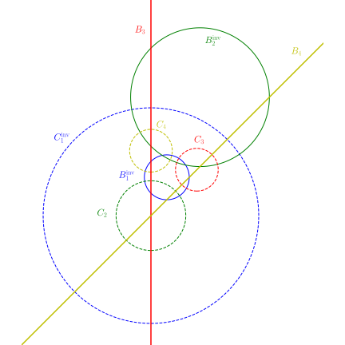
| \(W\) | Coxeter 群 |
| \(\Gamma\) | Coxeter 图 |
| \(\overline{ X }\) | 集合 \(X\) 的闭包 |
| \(X^\circ\) | 集合 \(X\) 的内点 |
| \(\mathrm{cone}(X)\) | \(\{\sum c_ix_i\mid x_i\in X,\ c_i\geq0\}\) |
| \(\langle v,\,f\rangle\) | 双线性对 \(V\times V^\ast\to\mathbb{R}: \langle v,\,f\rangle\to f(v)\) |
| \(\Delta=\{\alpha_s\}\) | 单根系 |
| \(\Delta^\ast=\{\omega_s\}\) | \(\Delta\) 的对偶基，即基本权 |
| \(\mathcal{Q}\) | 双曲空间中 \((v,v)\leq0\) 的点组成的集合 |
| \(u\sim v\) | \(u,v\) 属于 \(\mathcal{Q}\setminus\{0\}\) 的同一个连通分支 |